第 41 章：Token Factory 视角¶
41.1 导读¶
41.1.1 本章回答的问题¶
- 为什么 token 可以作为 AI Factory 的核心产出度量？
- tokens/s、tokens/W、cost/token、revenue/token 分别回答什么问题？
- 如何把 GPU 利用率、推理毛利和训练 ROI 放到同一个经济模型中？
41.1.2 本章上下文¶
- 层级定位：本章属于
经济性与产业案例，重点讨论Token Factory、商业模式、案例研究和从 0 到 1 建设路径。 - 前置依赖：建议先理解 第 40 章：SRE 与运维体系 中的核心对象和路径。
- 后续关联：本章内容会继续连接到 第 42 章：AI Factory 商业模式，并在系统地图、深度标准和读者测试中被交叉引用。
- 读完能力：读完本章后，读者应能把《Token Factory 视角》中的概念映射到 AI Factory 的生产路径、工程对象、观测证据和设计取舍。
41.1.3 读者测试¶
- 机制题：读者能否解释 token 是 AI Factory 的产出、tokens/s、tokens/W、cost/token 的核心机制，以及它们如何共同支撑《Token Factory 视角》？
- 边界题：读者能否区分 技术产能、商业收入、成本账本、SLA 责任和建设路线 的责任边界，并说明哪些问题不能简单归因到本章组件？
- 路径题：读者能否从业务目标追到 token 产出、成本账本、商业模式、案例取舍和建设 PRR，并指出本章对象在路径中的位置？
- 排障题：当《Token Factory 视角》相关生产症状出现时，读者能否列出第一层证据、下一跳证据、可能 owner 和止血动作？
41.1.4 一个真实场景¶
一个 MaaS 平台请求量持续增长，业务报表看起来很好：API 调用数上升，活跃客户增加，模型目录也在扩展。财务团队却发现 GPU 租赁、电力和运维成本增长更快，单月毛利被明显压缩。平台团队最初用 QPS 和 GPU utilization 解释产能，认为系统并不浪费；SRE 团队看到可用性达标，也认为可靠性没有问题。问题在于，这些指标没有解释“每个 token 的成本和收入”。
进一步拆分后，团队发现请求形态已经变化。长上下文 RAG 请求增加，input token 占比上升；Agent 应用带来多轮 tool calling，单个用户任务背后有多次模型调用；reasoning 模型输出更长，output token 和 decode 时间增长；失败重试、免费额度和内部测试流量没有进入成本分摊。QPS 增长是真实的，但 token 结构变化让成本模型失真。
Token Factory 视角把问题改写为一组更可计算的问题：平台每秒生产多少可计费 token，每瓦电力生产多少 token，每个 token 的完整成本是多少，每个 token 带来多少收入，哪些 token 是高价值产出，哪些 token 只是失败重试或低质量输出。它不是把 AI Factory 简化为财务表，而是把工程指标和经济结果连接起来。
这个场景也说明，单看 GPU 利用率会误导。GPU 很忙不等于赚钱，tokens/s 很高不等于毛利好，cost/token 低也不等于用户体验好。AI Factory 的经营目标不是生产最多 token，而是在质量、安全和 SLO 约束下，稳定生产有价值、可计量、可解释成本的 token。
因此，Token Factory 是一种运营视角：它让平台团队、模型团队、SRE 和财务团队使用同一套事实讨论扩容、定价、模型路由、缓存、batching、免费额度和训练投资。没有这个视角，AI Factory 很容易在技术上繁荣，在经济上失控。
41.2 基础模型¶
41.2.1 核心概念¶
Token Factory 是 AI Factory 的产出度量和经济性视角。它关注系统如何把用户需求、模型能力、GPU 计算、网络存储、电力和运维组织起来，最终生产 token，并让这些 token 具备可计量的成本、收入、质量和体验属性。它不是一个独立技术组件，也不等同于 AI Factory 本身。
AI Factory 是完整生产系统，覆盖 Application、Platform、Model、Runtime、Orchestration、GPU IaaS、Network/Storage、Physical 和横切能力。Token Factory 是观察这个系统的一种透镜：从 token 产出反推容量、成本、能效、毛利和投资回报。这个区分很重要，否则团队会把“优化 token 成本”误解为全部目标。
token 在工程上有多种口径。input token 主要影响 prefill、上下文处理和 KV Cache 初始状态；output token 主要影响 decode、streaming 和持续 GPU/HBM 压力；reasoning token 可能影响内部推理成本但不一定全部对用户可见；cached token、free token、failed token 和 retried token 需要在账务和成本中明确处理。口径不清，报表就不可用。
Token Factory 的核心不是“越多越好”，而是“单位有价值产出的效率”。高质量、低延迟、可计费、满足安全策略的 token 才是有效产出。低质量回答、重复生成、失败重试、恶意调用和未归因内部流量，会消耗 GPU 和电力，却不一定产生业务价值。经济模型必须能区分这些 token。
在运营上，Token Factory 把四类指标放在一起：产能指标如 tokens/s，能效指标如 tokens/W，成本指标如 cost/token，收入指标如 revenue/token。再把这些指标与 TTFT、TPOT、错误率、模型质量、安全和用户留存关联，才能形成可执行决策。
它还要求团队明确哪些数字可以直接测量，哪些只能估算。token 数、延迟和 GPU 时间通常可测；电力分摊、平台研发和业务价值往往需要规则估算。估算并不可怕，可怕的是口径不公开，导致不同团队用不同账本讨论同一个问题。
41.2.2 系统架构¶
Token Factory 架构可以从请求进入网关开始。用户请求经过认证、限流、模型路由、推理服务、prefill、decode、token streaming、计量和账单；每个阶段都留下影响经济性的信号。网关知道租户和产品计划，模型服务知道模型版本和请求形态，推理引擎知道 batch、KV Cache 和 GPU 使用，计量系统知道 input/output/reasoning token，成本系统知道 GPU、电力、存储和运维成本。
这套架构的难点是统一账实关系。一个用户任务可能对应多个 API 请求，一个 Agent 步骤可能调用多个模型和工具，一个失败请求可能已经消耗大量 prefill 计算，一个 streaming 中断请求可能产生了部分 token。若计量系统只记录最终成功请求，就会低估成本；若成本系统只按 GPU 小时平均分摊，就无法解释不同模型、租户和请求形态的毛利差异。
经济模型还必须接入质量和 SLO。推理平台可以通过更大 batch 降低 cost/token，但 TTFT 可能上升；可以用小模型降低成本，但质量可能下降；可以提高缓存命中，但需要接受缓存一致性和隐私边界；可以牺牲冗余提高利用率，但 error budget 会被消耗。Token Factory 的架构必须把这些约束放在同一张图里。
最终，Token Factory 的输出不是一张静态财务表，而是运营控制面：它支撑定价、容量规划、模型路由、资源池划分、免费额度策略、成本归因、扩容优先级和训练投资决策。只有当 token、GPU、SLO、质量、成本和收入能够相互追踪时，AI Factory 才能从“能跑”进入“可经营”。
架构上还要保留审计路径。任何毛利、成本或收入结论，都应能回溯到原始计量事件、资源使用记录和产品价格规则。否则报表只能用于展示，不能用于定价、赔付、预算和扩容。
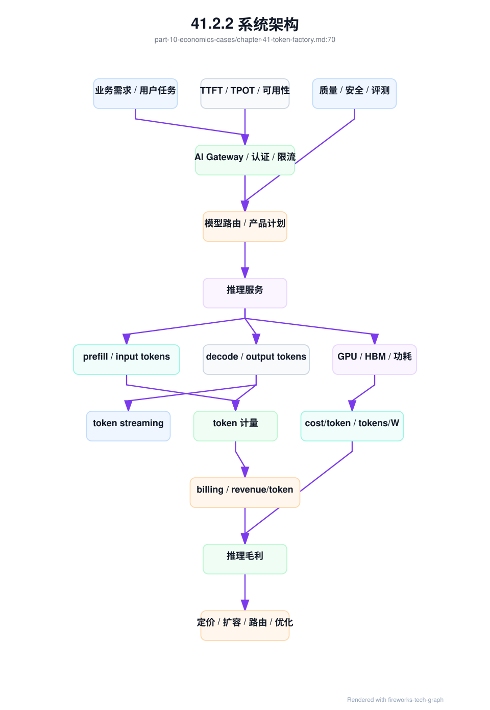
Token Factory 还需要一张账本汇聚图。它回答“某个 token 或任务的成本从哪里来”，也回答“哪些工程对象会进入经营决策”。不同账本不是财务表的重复，而是从不同工程路径汇聚到同一个单位经济模型。
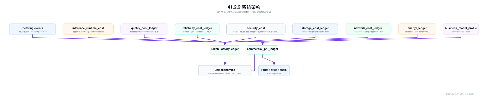
这张图提醒读者：cost/token 不是 GPU 成本除以 token 数那么简单。KV 泄漏、取消浪费、质量回归、SLA credit、安全事件、存储冷启动、网络拥塞和能耗都会进入单位经济。最终的经营动作也不只是一味扩容，可能是改路由、调价、压缩模型、限制免费额度、暂停某个场景或投资训练。
41.3 关键技术¶
41.3.1 token 是 AI Factory 的产出¶
对在线推理业务来说，token 是最细粒度、最容易计量的产出。用户请求进入 AI Factory，经过网关、认证、租户限流、模型路由、推理服务、prefill、decode、KV Cache、CUDA kernel、GPU/HBM 和 streaming，最终得到的是一串 token。这个过程把应用需求转化为可观测、可计费、可优化的计算产物。
把 token 作为产出，并不意味着所有 token 价值相同。一个准确解决用户问题的输出 token，与一次失败重试中浪费的 token，在成本上都消耗资源，在价值上却完全不同。一个安全策略拦截前已经完成 prefill 的请求，也可能产生成本但没有收入。Token Factory 要做的第一件事，就是区分 billable token、internal token、failed token、cached token 和 evaluation token。
token 口径还决定平台治理。若只统计 output token，长上下文 RAG 的 prefill 成本会被低估；若不区分 reasoning token，复杂推理模型的真实成本会被隐藏；若不记录模型版本和租户，成本无法归因；若不记录缓存命中，优化效果无法衡量。计量不是账单系统的细节，而是 AI Factory 的事实基础。
在商业上，token 把模型能力变成可交易单位；在工程上，token 把 workload 转化为容量规划入口；在 SRE 上，token 把用户体验和基础设施压力联系起来。tokens/s 下降可能意味着产能下降，TTFT 上升可能意味着 prefill 或排队压力，output token 变长可能改变 GPU decode 负载。
因此，本章说 token 是产出，是为了建立统一语言：业务讨论需求量，平台讨论路由和限流，模型团队讨论质量，基础设施团队讨论 GPU 和能效，财务讨论毛利。token 让这些讨论有共同分母。没有共同分母，AI Factory 的扩容和优化往往只能靠局部指标驱动。
这个共同分母还要允许分层。平台可以在技术层统计所有 token，在商业层只统计可计费 token，在质量层只统计通过评测或用户可见的 token。分层口径让团队既能看清真实消耗，也能看清真实价值。
41.3.2 tokens/s¶
tokens/s 表示单位时间处理或生成的 token 数，是推理产能的核心指标。它可以按模型、租户、endpoint、replica、GPU、资源池、集群或整个平台聚合。在线推理通常需要区分 input tokens/s 和 output tokens/s，因为 input token 主要驱动 prefill，output token 主要驱动 decode，两者对应的瓶颈不同。
容量规划不能只看 QPS。一个低 QPS 的长上下文法律问答应用，可能比高 QPS 的短问答应用消耗更多 GPU 时间和 HBM；一个 Agent 任务的用户侧 QPS 很低，但内部多轮调用会放大 token。tokens/s 把请求长度差异纳入视野，能更接近真实计算负载。
tokens/s 也不能孤立解释。高 tokens/s 可能来自更大的 batch、更宽松的延迟目标或更短输出；低 tokens/s 可能是质量策略、长上下文、冷启动、缓存失效或 SLO 约束导致。比较两个系统的 tokens/s，必须说明模型、精度、上下文长度、输出长度、并发、batching 策略和延迟目标。
在生产中，tokens/s 应同时服务容量和运营。容量侧用它判断扩容、资源池划分和热点模型；运营侧用它判断业务增长、免费额度消耗、异常流量和成本摊销；SRE 用它解释 SLO 退化是否来自 token 负载变化，而不是简单归因到“系统慢”。
更细的做法，是按请求阶段拆分 tokens/s：prefill throughput、decode throughput、streaming throughput 和计量吞吐。prefill 瓶颈和 decode 瓶颈的优化路径不同，前者可能需要上下文压缩、prefix cache 或路由，后者可能需要 batching、KV Cache 管理或引擎优化。tokens/s 只有拆到阶段，才真正可行动。
生产看板还应展示 tokens/s 的峰值、P95 和租户分布。平均吞吐足够，不代表峰值不拥塞；全局吞吐健康，不代表某个高价值租户没有被低价值流量挤压。容量决策要看分布，而不是只看总量。
41.3.3 tokens/W¶
tokens/W 表示每瓦功耗可以生产多少 token，是 AI Factory 能效的核心指标。GPU、CPU、内存、网络、存储、风扇、液冷和机房供配电都会影响最终能效。对大规模 AI Factory 来说，电力不仅是成本项，也是容量约束；同样机房电力下，tokens/W 越高，能够承载的业务越多。
tokens/W 适合比较模型优化、推理引擎、硬件代际、精度策略、batching 和机房工程的综合效果。量化、KV Cache 优化、连续批处理、权重缓存、低功耗策略和更好的散热，都可能改善能效。但这个指标必须在相同 workload 口径下比较，否则结论会失真。
例如，一个短上下文模型的 tokens/W 高，并不说明它比长上下文模型更“优秀”；一个宽松延迟目标下的 tokens/W 高，也不能直接用于严格在线 SLO。能效比较必须注明模型、输入输出长度、并发、SLO、精度、GPU 型号、功耗采集口径和是否包含机房 PUE。没有这些条件，tokens/W 只是漂亮数字。
工程上，tokens/W 可以用于三类决策。第一是硬件和机房选型，判断同等电力下哪种 GPU 和服务器形态更合适；第二是运行策略优化，判断 batch、缓存和模型压缩是否真正节能；第三是容量治理，在电力紧张时优先调度高价值或高能效 workload。
tokens/W 还提醒团队不要只追求 GPU utilization。GPU 忙但功耗高、token 价值低、SLO 差，并不是好结果。能效指标必须与 revenue/token、cost/token、质量和 SLO 一起看。AI Factory 的能效目标不是省电本身，而是在电力边界内生产更多有价值 token。
在电力受限的数据中心，tokens/W 还会改变产品优先级。高能效、高毛利、低风险 workload 可以优先获得容量；低能效且低价值的批量任务可以错峰或迁移。能效因此从设施指标进入业务调度。
能效需要 energy_ledger 支撑。它把 GPU power、rack power、PUE 或设施开销、token 产出和 workload 标签放在同一张账本里：
energy_ledger:
window: 2026-06-19T10:00Z/2026-06-19T11:00Z
scope:
rack_capacity_unit: dc-a-rack-12
resource_pool: inference-prod-h100
model: af-chat-large
energy:
gpu_power_kwh: measured
node_power_kwh: measured
rack_power_kwh: measured
facility_overhead_factor: measured_or_policy_defined
production:
input_tokens: measured
output_tokens: measured
billable_tokens: calculated
tokens_per_watt: calculated
joules_per_token: calculated
constraints:
power_limited: false
cooling_limited: false
capacity_derating_records: []
cooling_degradation_records: []
throttle_seconds: measured
economics:
energy_cost_per_token: calculated
power_cooling_induced_waste: calculated
derating_opportunity_cost: calculated
thermal_recovery_retest_cost: calculated
这个账本让 tokens/W 可审计。否则团队很容易只用 GPU board power 估算能效，忽略 rack power、制冷开销、降频、低利用率和失败 token。能效优化也应能回溯到具体模型、资源池、rack 和时间窗口，才可能指导调度、定价和扩容。
energy_ledger 还应能解释“为什么能效变差”。如果 tokens/W 下降同时存在 cooling_degradation_record，根因可能是热退化导致 GPU 降频；如果存在 capacity_derating_record，成本不只是当前运行任务变慢，还包括被拒绝或迁移的 workload opportunity cost；如果 rack power 不变但 billable tokens 下降，问题可能在 workload 质量、调度、模型或推理 runtime。能效账本必须把能耗、产出和约束同时记录，否则 tokens/W 只能说明结果，不能指导动作。
能效治理不应鼓励牺牲 SLO。降低 power cap 可能改善短期功耗，但如果 TTFT、TPOT、训练 step time 或质量回归，单位成功任务成本可能上升。更可靠的做法是把 power cap、降额、冷却恢复、batch 策略和模型路由放进同一张报表，比较 energy cost saving 与 reliability/quality loss。Token Factory 关注的是有效 token，而不是最低瓦数。
容量投产和降额也需要单独成本记录：capacity_activation_cost_record。energy_ledger 解释某个时间窗口里的能耗和 token 产出，reliability_cost_ledger 汇总事故和预防成本；但当 GPU 已采购、已上架、却因为 power、cooling、fabric、storage 或验收缺口不能进入 workload-fit 状态时，需要一个对象专门解释“资本已经投入但产能没有兑现”的损失。
capacity_activation_cost_record:
record_id: cacr-dc-a-rack12-20260620
linked_evidence:
capacity_activation_record: dc-a-rack-12-2026-06
workload_fit_capacity_gate: wfcg-dc-a-rack12-20260620
physical_capacity_activation_matrix: pcam-dc-a-rack12-20260620
facility_capacity_evidence_bundle: fceb-dc-a-rack12-20260620_if_incident
energy_ledger: energy-rack12-20260620-1000
capacity_derating_records: [derate-rack12-20260620-001]
cooling_degradation_records: [cool-deg-20260620-002]
capacity_delta:
planned_gpu: 128
installed_gpu: 128
accepted_gpu: calculated
allocatable_gpu: calculated
workload_fit_gpu:
premium_inference: calculated
large_distributed_training: calculated
unavailable_gpu_by_reason:
power_limited: calculated
cooling_limited: calculated
fabric_limited: calculated
storage_limited: calculated
baseline_invalid: calculated
cost_components:
capital_idle_cost: calculated
depreciation_before_activation_cost: calculated
delayed_revenue_or_internal_value: calculated
reservation_deferral_cost: calculated
training_schedule_slip_cost: calculated_if_training_committed
remediation_and_retest_cost: measured
power_cooling_recovery_cost: calculated
opportunity_cost_of_limited_mode: calculated
derived:
activated_capacity_ratio: calculated
cost_per_workload_fit_gpu_day: calculated
tokens_w_delta_due_to_power_cooling: calculated_if_serving
roi_delay_days: calculated
这个记录会改变扩容复盘。若 delayed cost 主要来自 cooling commissioning，下一批采购前就应把液冷验收和 spare capacity 纳入计划；若主要来自 fabric/storage baseline，问题在基础设施联调；若主要来自 baseline invalidation 和资源池同步，问题在平台控制面。把这些成本分开，团队才能判断是继续买 GPU、投资机房、补自动化、还是调整销售承诺。Token Factory 视角下，没有激活的 GPU 不是中性库存，而是正在消耗折旧、机房、电力准备和机会成本的未兑现产能。
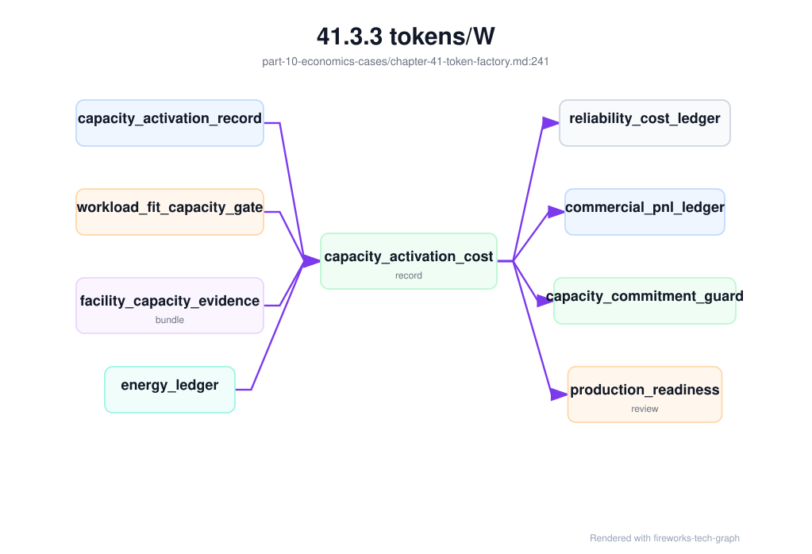
异构 GPU 资源池需要更进一步的 heterogeneous_gpu_cost_scorecard。单个 energy_ledger 解释某个资源池或 rack 在某个窗口的能效，但模型路由和扩容决策需要比较不同 GPU class 在同一 workload slice 上的有效产出。比较口径必须包含 tokens/s、tokens/W、cost/token、TTFT/TPOT、质量门禁、可用容量、失败率和回滚成本，否则“新 GPU 更快”或“旧 GPU 更便宜”都会变成片面结论。
heterogeneous_gpu_cost_scorecard:
scorecard_id: hgc-code-assistant-20260620
workload_slice:
endpoint: chat-code-prod
request_shape: long_context_medium_output
quality_slice: code_generation_enterprise
compared_classes:
h100-full-card-prod:
production_state: production
tokens_per_second: measured
tokens_per_watt: measured
cost_per_token: calculated
cost_per_successful_answer: calculated
ttft_tpot_slo: pass
quality_gate: pass
available_capacity: constrained_by_long_context_hbm
rollback_cost: low
h200-long-context-prod:
production_state: validated
tokens_per_second: measured
tokens_per_watt: measured
cost_per_token: calculated
cost_per_successful_answer: calculated
ttft_tpot_slo: pass
quality_gate: pass
available_capacity: preferred_for_long_context
rollback_cost: medium
b200-canary:
production_state: canary
tokens_per_second: measured_in_canary
tokens_per_watt: measured_in_canary
cost_per_token: provisional
cost_per_successful_answer: provisional
ttft_tpot_slo: under_observation
quality_gate: limited_slice_passed
available_capacity: canary_cap_only
rollback_cost: high_until_runtime_matures
decision_support:
preferred_for_premium_long_context: h200-long-context-prod
preferred_for_internal_batch: b200-canary_if_quality_not_customer_visible
keep_h100_as_fallback: true
update_gpu_generation_route_decision: true
这个 scorecard 的重点是把硬件选择和用户价值绑定。H200 在长上下文上可能因为 HBM 余量降低 TPOT 和重试，cost_per_successful_answer 优于 H100；B200 canary 可能 tokens/W 更好，但因为 runtime、质量门禁或回滚成本未稳定，暂时只适合内部批量或低风险流量；H100 单位 token 成本不一定最低，却可能因为成熟度和 fallback 成本低而保留在高价值路径里。Token Factory 需要这种“带约束的经济比较”，而不是只比较平均 cost/token。
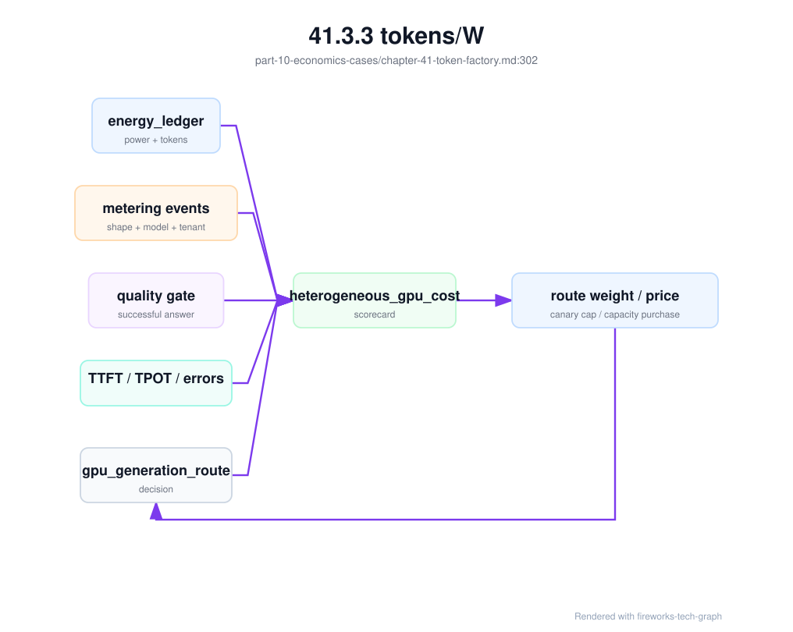
异构成本 scorecard 也能解释扩容优先级。若新 GPU 的 tokens/W 更好但可用容量受液冷或 runtime gate 限制，扩容动作可能不是继续采购，而是投资机房、driver/engine 适配或质量门禁；若旧 GPU 在短请求上毛利仍然健康，就不必为了统一代际而提前退役；若某类 GPU 的 cost_per_successful_answer 长期高于价格，就需要路由降权、调价、限制上下文或迁移模型。异构池的经营目标不是让所有请求跑在最新 GPU 上，而是让每类请求跑在最适合的生产资源上。
41.3.4 cost/token¶
cost/token 是生产单个 token 的单位成本。最简单的公式是 total cost 除以 total tokens，但真正可用的成本模型必须拆分成本项和 token 口径。GPU 折旧或租赁、电力、制冷、机房、网络、存储、平台研发、运维、准入、故障、失败重试、闲置冗余和免费额度都会影响真实成本。
cost/token = total_cost / effective_tokens
total_cost = gpu_cost
+ power_and_cooling_cost
+ datacenter_cost
+ network_storage_cost
+ platform_ops_cost
+ failure_and_retry_waste
+ reserved_capacity_cost
这里的 effective_tokens 也要定义清楚。按 billable tokens 计算，可以观察商业毛利；按 all generated tokens 计算，可以观察系统效率；按 successful user-visible tokens 计算，可以观察有效产出；按 model、tenant、endpoint 或 product plan 分摊，可以观察成本归因。不同口径回答不同问题，不能混用。
cost/token 的价值在于迫使工程决策显性化。提高 batching 可能降低 GPU 成本，但增加 TTFT；使用更小模型可能降低成本，但影响质量；保留更多热备会提高成本，但保护 SLA；减少 checkpoint 或缓存可能省钱，但增加失败恢复成本。只有把这些影响折算到 token 成本和 SLO，团队才能判断取舍。
成本模型还要处理失败和浪费。推理超时、用户取消、streaming 中断、模型冷启动、缓存未命中、异常重试和内部压测，都可能消耗 GPU 但不产生收入。若这些成本被平均摊到正常 token 上，平台会误判毛利和定价。高质量的 cost/token 报表必须能显示浪费来源。
Prefix/radix cache 的经济口径也要分开看。缓存写 token 更像一次成本投入：本次请求已经完成 prefill，并把可复用前缀保留在有限 KV cache 中；缓存读 token 才是兑现收益：后续相似请求少算了对应前缀。若某个业务线长期“写很多、读不到”，它不仅没有降低 cost/token，还会占用 HBM，挤掉高复用系统提示、工具 schema 或共享 RAG 前缀。Token Factory 因此要观察 cache_read_tokens / input_tokens、cache_write_tokens -> future_cache_read_tokens 转化和 eviction 成本，而不是奖励高缓存写入。
最后，cost/token 不是越低越好。极端降低成本可能牺牲质量、安全、延迟和可靠性，最终降低 revenue/token 或用户留存。正确目标是在业务目标和 SLO 约束下，持续降低单位有效 token 成本，而不是把所有 token 都变得最便宜。
成本口径还要有版本。模型升级、驱动升级、推理引擎切换和价格调整都会改变 cost/token。没有版本标签，成本曲线变化无法归因，也无法判断优化是否真实有效。
安全成本也必须进入 cost/token。多租户 AI Factory 为了安全会投入 dedicated pool、KMS、密钥轮换、审计留存、日志脱敏、合规评测、红队、clean-to-reuse、观测访问控制、break-glass 审计和安全值班。这些成本不是“非生产开销”，而是生产可信 token 的必要成本。高敏租户购买的不是更贵的 GPU，而是更强的数据边界、隔离边界和可审计证据。
security_cost_ledger =
dedicated_isolation_cost(resource_class, unused_reserved_capacity)
+ kms_and_secret_operation_cost(key_count, rotation_count)
+ audit_retention_cost(audit_events, retention_window)
+ telemetry_redaction_cost(trace_volume, classification_level)
+ clean_to_reuse_cost(reuse_checks, retest_duration)
+ compliance_validation_cost(evaluations, evidence_packages)
+ security_oncall_and_incident_cost(security_incidents)
secure_cost_per_token =
(base_request_cost + allocated_security_cost) / effective_tokens
这个账本能防止两个误判。第一个误判是把强隔离租户的成本平均摊给所有租户，导致共享池价格被抬高；第二个误判是为了降低 cost/token 削减审计、清理和隔离，短期成本下降，长期安全事故成本上升。安全成本应按 tenant、resource_class、data_classification 和 service_level 分摊，让用户理解“为什么专属、加密、长保留和强审计更贵”。
安全成本应落成结构化 security_cost_ledger，并引用生产证据对象，而不是只按安全团队预算平均分摊。它应区分预防成本、事故成本、争议成本和合规成本：预防成本购买隔离、密钥轮换、脱敏和审计；事故成本来自 key 泄露、trace 泄露、越权路由或 denial-of-wallet；争议成本来自 usage hold、账单重算和客户沟通；合规成本来自证据保留和审计导出。
security_cost_ledger:
window: 2026-06
tenant: enterprise-a
evidence:
tenant_isolation_evidence: tie-20260620-001
prompt_trace_redaction_records: sampled
secret_boundary_evidence: sbe-20260620-001
egress_provider_decisions: sampled
security_evidence_bundle: seb-20260620-001-if_any
billing_dispute_replay: bdr-20260620-001-if_any
cost_components:
dedicated_isolation_cost: calculated
kms_and_secret_rotation_cost: calculated
redaction_and_audit_retention_cost: calculated
provider_boundary_validation_cost: calculated
security_incident_response_cost: calculated_if_any
billing_hold_and_replay_cost: calculated_if_any
outputs:
secure_cost_per_token: calculated
security_prevention_cost_per_tenant: calculated
security_incident_cost_per_token_delta: calculated
这个 ledger 让安全投入能和产品套餐、租户等级和数据等级对齐。一个高敏租户要求专属资源池、长审计保留、禁止第三方 provider、短期凭据和更强脱敏，那么它的 secure cost/token 应高于普通共享租户。反过来，如果普通租户不需要这些能力，就不应承担高敏租户的隔离成本。安全经济模型的目标不是降低安全，而是让安全边界和价格、SLA、合同可解释地一致。
网络成本也不能只按交换机和光模块折旧平均分摊。对 AI Factory 来说，更大的隐藏成本来自网络退化导致的 GPU idle、训练重跑、checkpoint 叠加、推理 streaming gap 和资源降级。network_cost_ledger 应把网络路径证据、通信 critical path 和拥塞事件连接起来：
network_cost_ledger:
window: 2026-06-20T10:00Z/2026-06-20T11:00Z
scope:
fabric: train-fabric-a
resource_pool: training-prod-h100
affected_workloads: [train-20260620-017]
evidence:
network_path_evidence: net-path-042
congestion_event_record: net-cong-20260620-001
rail_balance_report: rail-balance-20260620-017
communication_critical_path_record: comm-critical-20260620-017
cost_components:
gpu_idle_due_to_network_hours: calculated
failed_or_restarted_gpu_hours: calculated
checkpoint_overlap_waste: calculated
degraded_capacity_hours: calculated
troubleshooting_labor_cost: optional
attribution:
likely_cause: rail_congestion_or_checkpoint_overlap
owner: network_and_scheduler
confidence: evidence_based
economic_output:
network_waste_cost: calculated
cost_per_effective_training_token_delta: calculated_if_training_tokens_available
roi_case_for_fabric_upgrade: input_to_capacity_planning
这份账本能回答“网络升级值不值得”的问题。若某个 fabric 的端口利用率很高但没有造成 exposed communication time，扩容优先级未必最高；若某条 rail 的拥塞长期造成大训练 GPU idle，即使平均利用率不高，也可能值得修拓扑、改 checkpoint 窗口或扩容。网络成本必须按 workload 影响计量，而不是按设备价格摊销。
网络事故还应有更细的 network_incident_cost_record。network_cost_ledger 适合按窗口汇总网络经济性，network_incident_cost_record 则用于一次具体事故或一次 fabric 变更回归。它必须区分“网络设备坏了”与“网络路径让 workload 变贵了”。一次 PFC/ECN 配置漂移、rail 失衡、错误 rank placement、checkpoint 与 NCCL 叠加、推理权重加载占用训练 fabric，都会产生不同成本和 owner。
network_incident_cost_record:
incident_id: inc-20260620-fabric-001
linked_evidence:
fabric_change_record: fabric-chg-20260620-003_if_recent
fabric_change_regression_gate: fcg-20260620-003_if_recent
fabric_change_acceptance_matrix: fcam-20260620-003_if_recent
congestion_fault_tree_execution: cfte-20260620-001
network_diagnostic_bundle: ndb-20260620-001
rail_balance_report: rail-balance-20260620-017
collective_trace_record: ctr-20260620-017
communication_critical_path_record: ccpr-20260620-017
checkpoint_overlap_evidence: cko-20260620-017_if_present
affected_scope:
fabric: train-fabric-a
racks: [rack-12, rack-13]
rails: [rail1]
affected_jobs: [train-20260620-017]
affected_endpoints: []
affected_gpu_count: 256
affected_window: 2026-06-20T10:12Z/2026-06-20T10:26Z
cost_components:
exposed_communication_wait_gpu_hours: calculated
full_job_idle_gpu_hours: calculated_if_hang
requeue_or_restart_gpu_hours: calculated_if_restarted
checkpoint_replay_or_rollback_cost: calculated_if_checkpoint_affected
degraded_capacity_opportunity_cost: calculated
fallback_or_route_cost: calculated_if_inference_affected
acceptance_retest_cost: measured
remediation_engineering_cost: measured_or_allocated
delayed_model_release_cost: calculated_if_training_milestone_impacted
attribution:
primary_domain: pfc_ecn_qos_or_rail_imbalance_or_scheduler_placement_or_storage_overlap
shared_owners: [network, platform-scheduler, training-runtime]
confidence: evidence_based
not_counted_as_network_cost:
- compute_skew_without_network_wait
- data_loader_wait_without_fabric_overlap
- model_code_collective_mismatch
ledger_outputs:
append_to_network_cost_ledger: true
append_to_reliability_cost_ledger: true
update_training_roi_ledger: true_if_training
update_prr_gate: fabric_change_prr_drill_if_gap_found
这个对象能防止两种相反误判。第一种是把所有端口异常都算成网络事故成本，导致网络团队为旁路流量或非关键路径指标背锅；第二种是只要训练最终完成，就忽略通信等待造成的 GPU 小时浪费。正确口径是只计算暴露在 workload critical path 上的损失，并把证据链写清楚。若通信等待没有阻塞 step，不应进入 full job idle；若 checkpoint overlap 放大了拥塞，就应把成本分摊到存储策略和 fabric 策略；若 scheduler 把 rank 放进不满足拓扑的节点集合，就应把成本分摊到调度和资源画像。
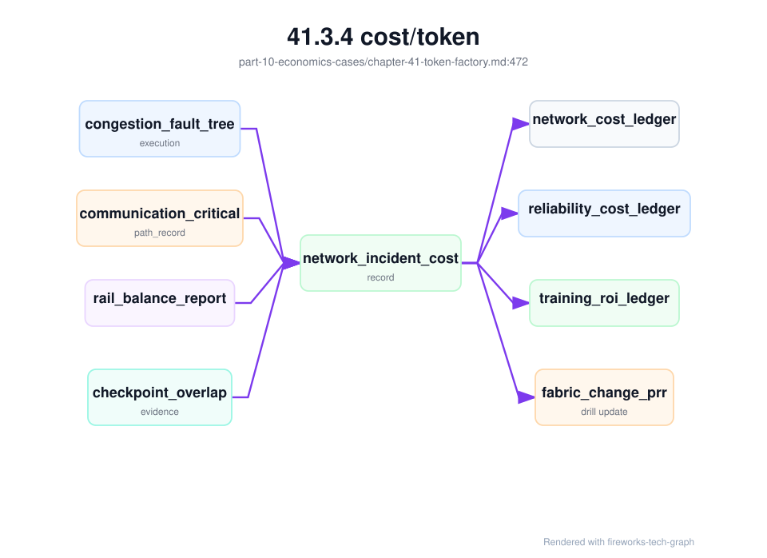
对 Token Factory 来说，网络事故成本最终会落到 cost_per_effective_training_token、cost_per_successful_answer 或 delayed revenue。训练侧关注的是有效训练进展是否被拖慢，推理侧关注的是 token streaming、TTFT/TPOT、fallback 和 SLO credit 是否被影响。网络成本模型若只停在交换机预算，无法指导业务取舍；若能落到成功 token 和有效 step，才会进入容量规划、变更门禁和商业优先级。
推理运行时优化也必须进入成本账本。Speculative decoding、prefix cache、continuous batching、PD 分离和新的 engine profile 都可能让某个指标变好，同时让另一个成本变坏。inference_runtime_cost_ledger 的目标不是给每个 kernel 精确计价，而是让“快了多少、贵了多少、质量是否变、失败是否变多”可以被同一张表回答。
inference_runtime_cost_ledger:
window: 2026-06-20T10:00Z/2026-06-20T11:00Z
endpoint: af-chat-large-prod
serving_release: af-chat-large-20260619-r3
engine_profile: vllm-prod-h100-v7
workload_slices:
- short_chat
- long_context_qa
- long_generation
evidence:
kv_block_ledger_rollup: kvbl-rollup-20260620-1000
kv_block_leak_forensic_record: kv-leak-20260620-001-if-any
speculative_decoding_report: spec-decode-20260620-001
speculative_decoding_regression_record: spec-reg-20260620-001-if-any
engine_canary_record: engine-canary-20260620-001
engine_canary_guardrail_action: ecga-20260620-001-if-any
pd_disaggregation_contract: pd-contract-if-enabled
pd_transfer_evidence: pdx-rollup-20260620-1000-if-enabled
endpoint_admission_decision_sample: sampled
quality_cost_ledger: qcost-20260620-1000
cost_components:
prefill_gpu_cost: calculated
decode_gpu_cost: calculated
kv_block_seconds_cost: calculated
cache_write_investment_cost: calculated
cache_read_savings: calculated
cache_pollution_eviction_cost: calculated
wasted_kv_after_cancel_cost: calculated
kv_leak_block_seconds_cost: calculated_if_leak_detected
draft_model_cost: calculated_if_speculative
speculative_regression_cost: calculated_if_quality_or_format_regressed
kv_transfer_cost: calculated_if_pd_enabled
pd_transfer_retry_cost: calculated_if_pd_enabled
canary_capacity_and_rollback_cost: calculated
failed_or_retried_request_cost: calculated
outputs:
cost_per_generated_token: calculated
cost_per_delivered_token: calculated
cost_per_successful_answer: calculated
ttft_delta: measured
tpot_delta: measured
quality_adjusted_margin_delta: calculated
这份账本能防止三类常见误判。第一，speculative decoding 降低 TPOT，但 draft 模型成本、验证开销和质量回归可能让 cost_per_successful_answer 上升。第二，PD 分离降低 TTFT，但 KV transfer、两池容量比例和失败语义可能增加运维和重试成本。第三，prefix cache 命中提升 prefill 效率，但过大的缓存生命周期会产生 KV block 秒成本和隐私边界成本。运行时优化只有同时通过延迟、质量、账本和故障语义，才算经济上成立。
推理 runtime 事故应进一步生成 inference_runtime_incident_cost_record。inference_runtime_cost_ledger 是窗口账本，适合持续运营；事故成本记录则解释某次 TTFT、TPOT、streaming gap、KV leak、PD transfer failure 或 canary rollback 造成了多少损失、哪些 token 可计费、哪些成本应归入预防或浪费。没有这个对象，事故会在 SRE 中关闭，但毛利报表只看到平均 cost/token 变差。
inference_runtime_incident_cost_record:
record_id: iricr-inc-20260620-ttft-001
incident_id: inc-20260620-ttft-001
inference_runtime_fault_tree_execution: irfte-inc-20260620-ttft-001
diagnostic_bundle: inference-runtime-bundle-20260620-001
affected_scope:
endpoint: af-chat-large-prod
engine_profile: vllm-prod-h100-v7
workload_slices: [long_context_qa]
tenants: sampled_or_measured
evidence:
engine_request_state_ledger_samples: sampled
kv_block_leak_forensic_record: optional
pd_transfer_evidence: optional
engine_canary_guardrail_action: optional
metering_replay: required
cost_breakdown:
generated_but_not_delivered_token_cost: calculated
failed_or_retried_request_cost: calculated
wasted_kv_block_seconds_cost: calculated
pd_transfer_retry_cost: calculated_if_pd_enabled
canary_capacity_or_rollback_cost: calculated_if_canary
sla_credit_or_refund_exposure: estimated_if_customer_visible
support_and_engineering_response_cost: measured
revenue_treatment:
billable_tokens: reconciled
non_billable_partial_tokens: reconciled
billing_hold_required: true_or_false
customer_credit_policy: applied_if_needed
ledger_updates:
inference_runtime_cost_ledger: append
token_ledger: correction_if_needed
quality_cost_ledger: append_if_quality_or_format_regressed
prr_or_runtime_gate: update_if_preventable
这个对象的关键是把“引擎做了多少工作”和“用户收到了多少价值”分开。Generated token 可能因为客户端断连、streaming flush 失败或 guardrail 中断没有交付；KV block 可能在请求关闭后继续占用；PD transfer 可能已经消耗 prefill 资源但没有进入 decode；canary 回滚可能短期增加成本，却避免更大范围事故。Token Factory 不能只按生成 token 计算收入，也不能只按 delivered token 忽略未交付成本。
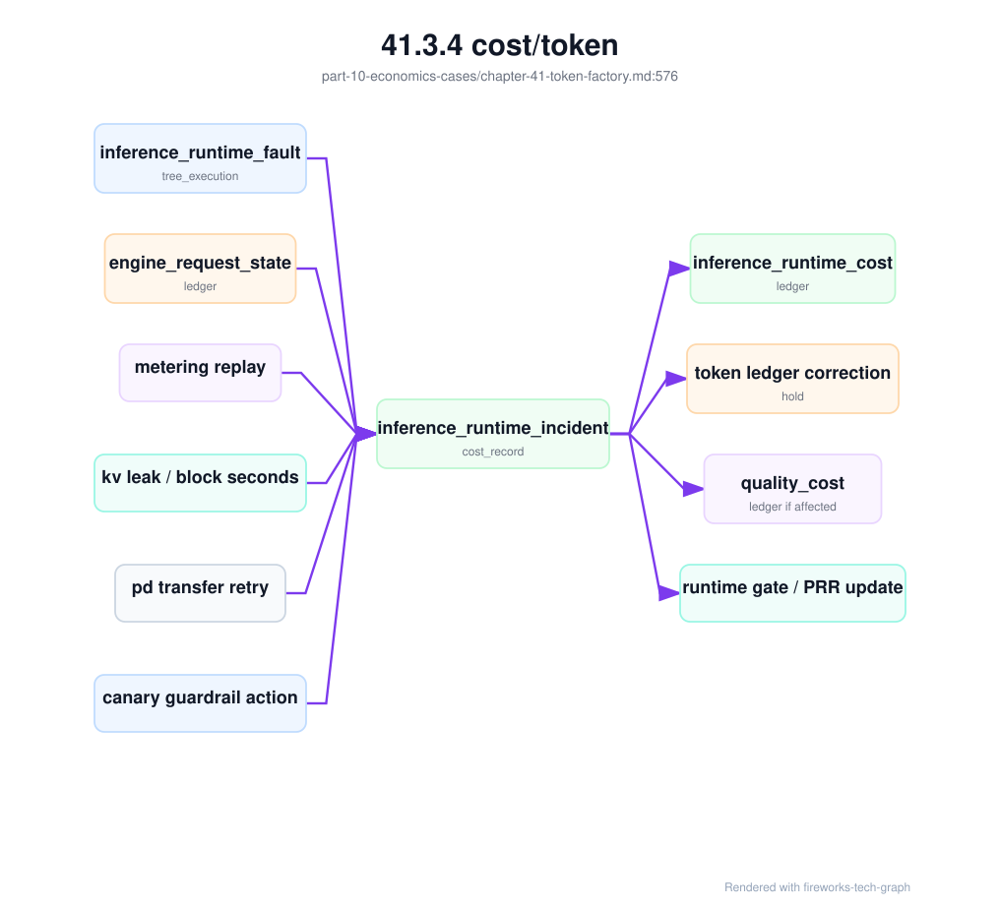
容器 GPU runtime 事故也应进入经济账本。它和推理引擎事故不同：推理引擎事故发生在 model server 已启动之后，关注 KV、prefill、decode、streaming 和 metering；容器 runtime 事故发生在 workload 从调度结果变成容器进程的边界上，关注 device plugin 分配、CRI/runtime handler、OCI hook、CDI/NRI、libnvidia-container、GPU UUID/MIG 可见性、RDMA device 注入和 DCGM 标签是否一致。若这类事故只在 SRE 里关闭，Token Factory 会低估三类成本：GPU 已分配但容器无法启动的空转成本、可见设备错配导致的错误生产成本、观测/计量标签断链导致的账单和成本归因成本。
container_runtime_incident_cost_record:
record_id: cricr-20260620-gpu-runtime-001
incident_id: inc-20260620-gpu-runtime-001
linked_evidence:
container_gpu_runtime_fault_tree_execution: cgrfte-20260620-001
container_runtime_change_record: crc-gpu-runtime-20260620-001_if_recent
container_gpu_runtime_acceptance_matrix: container-gpu-runtime-20260620
oci_runtime_injection_diff: sampled
gpu_assignment_record: sampled
gpu_device_visibility_reconciliation: sampled
gpu_operator_upgrade_evidence: optional
rdma_device_in_container_probe: optional
affected_scope:
resource_pool: h100-inference-canary
nodes: measured
affected_workloads: [gpu-smoke-runtimeclass, af-chat-large-canary]
affected_gpu_count: measured
affected_tenants: sampled_or_measured
incident_window: 2026-06-20T10:12Z/2026-06-20T10:35Z
cost_breakdown:
gpu_allocated_but_container_not_ready_hours: calculated
failed_pod_retry_gpu_reservation_cost: calculated
rollout_pause_or_capacity_derating_cost: calculated
wrong_device_visibility_risk_cost: estimated_if_isolation_breach_possible
mig_or_full_card_mismatch_retest_cost: measured
rdma_missing_device_training_or_serving_waste: calculated_if_affected
dcgm_or_metering_label_reconciliation_cost: calculated_if_labels_changed
fallback_to_other_pool_or_provider_cost: calculated_if_customer_traffic_moved
rollback_and_reacceptance_cost: measured
support_and_engineering_response_cost: measured_or_allocated
revenue_treatment:
billable_tokens_during_window: reconciled
tokens_held_for_visibility_or_metering_uncertainty: reconciled
billing_hold_required: true_or_false
customer_credit_policy: applied_if_needed
ledger_updates:
reliability_cost_ledger: append
inference_runtime_cost_ledger: append_if_serving_capacity_affected
network_cost_ledger: append_if_rdma_path_affected
security_cost_ledger: append_if_device_isolation_breach
token_ledger: correction_if_metering_label_changed
production_readiness_review: update_container_runtime_gate
这个对象的 stop rule 必须严格。docker run --gpus all 成功不能把 Kubernetes 事故成本归零，因为 kubelet 可能走的是另一条 CRI/runtime handler；容器内 nvidia-smi 成功也不能把成本归零，因为 Pod 可能看到未分配 GPU、MIG profile 可能错误、RDMA device 可能缺失、DCGM 标签可能已经断链。只有 Kubernetes 分配事实、OCI/CDI 注入事实、容器内可见性事实和计量标签事实全部对齐，才可以关闭经济影响。否则要么继续 billing hold，要么把不确定成本计入可靠性或安全账本。
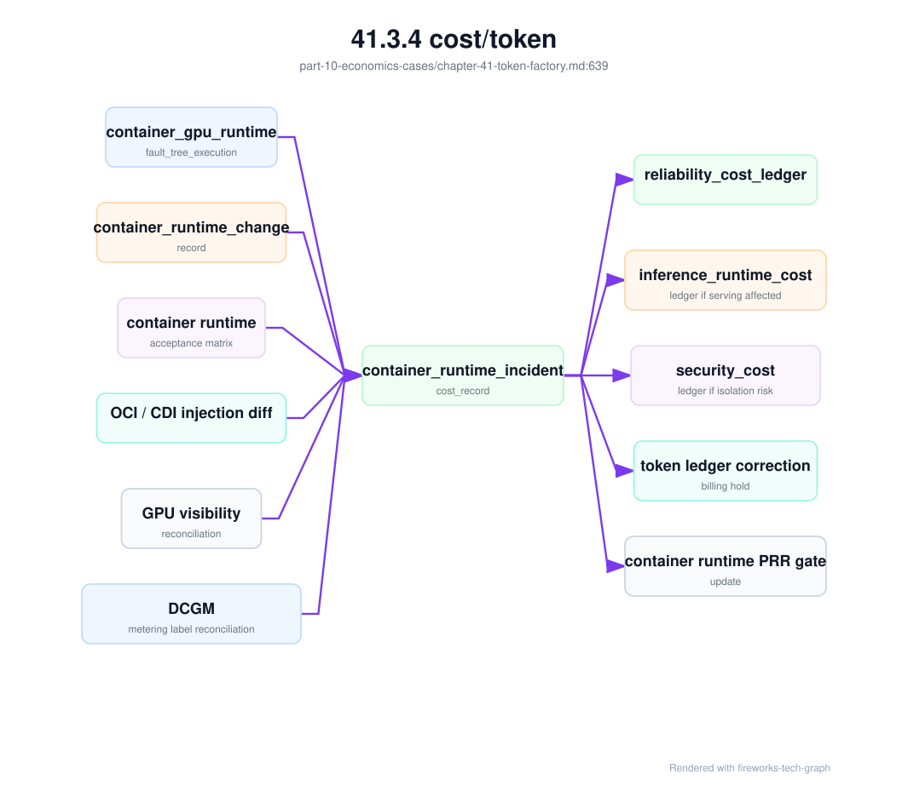
容器 runtime 成本记录还能指导投资优先级。若主要成本来自 RuntimeClass 配置漂移，应加强变更门禁和节点配置采样；若主要成本来自 CDI spec 生成或 hook 行为差异，应把 OCI diff 纳入准入矩阵；若主要成本来自 device plugin 策略和 MIG 暴露不一致，应重做资源声明、可见性对账和租户隔离测试；若主要成本来自 DCGM 或 metering 标签断链，应把观测 schema 作为 runtime 变更的一等验收项。Token Factory 视角下，这些都不是“平台小故障”，而是会直接污染产能、账单、SLA 和毛利的生产事故。
推理 runtime 成本还要计算“预防成本”。Canary 预留的 5% 容量、自动冻结后回滚到旧 profile 的低效率、为了保留诊断证据而增加的 trace 采样、为了修复 KV 泄漏而临时关闭长上下文 admission，都会让短期 cost/token 变差。但这些成本如果阻止了大范围低质量输出、账单争议或 SLA 违约，应该被记为 prevention cost，而不是简单归入浪费。Token Factory 的经济学不是把所有开销压低，而是把能降低风险暴露的开销和无效浪费区分开。
runtime_prevention_cost:
window: 2026-06-20T10:00Z/2026-06-20T11:00Z
triggers:
- engine_canary_guardrail_action: ecga-20260620-001
- kv_block_leak_forensic_record: kv-leak-20260620-001
prevention_cost_components:
reserved_canary_capacity_cost: calculated
rollback_to_less_efficient_profile_cost: calculated
diagnostic_sampling_cost: calculated
temporary_shed_revenue_loss: calculated
avoided_loss_estimate:
avoided_slo_penalty: estimated
avoided_low_quality_answer_cost: estimated
avoided_billing_dispute_cost: estimated
decision:
keep_guardrail: true
tune_threshold: review_if_false_positive_high
这个账本让 runtime 团队和业务团队能讨论同一个问题：一次自动止血到底是“过度保守”还是“避免更大损失”。如果 guardrail 经常触发但没有避免实际损失，阈值可能过严；如果每次触发都避免了高价值租户事故，预留 canary 容量和诊断采样就是合理成本。
模型服务发布组合事故应生成 serving_release_cost_record。它和 inference_runtime_incident_cost_record 的边界不同：runtime 成本关注 KV、PD、decode、streaming 和引擎状态；release 成本关注 weights、tokenizer、template、route、fallback、cache、usage schema、rollback 和质量门禁是否作为一个组合工作。一次发布事故可能没有 GPU 故障，也没有引擎 OOM，但仍然造成低质量 token、不可计费 token、fallback 到更贵 provider、回滚占用热容量、cache rewarm 和客户 credit。
serving_release_cost_record:
record_id: srcr-20260620-release-001
incident_id: inc-20260620-release-001
linked_evidence:
serving_release_evidence_bundle: sreb-af-chat-large-20260620-001
serving_release_fault_tree_execution: srft-20260620-001
serving_release_bundle: srb-af-chat-large-20260619-r3
serving_route_release_contract: srrc-af-chat-large-20260620
serving_rollback_record: srr-20260620-001_if_any
affected_scope:
endpoints: [af-chat-large-prod]
tenants: [enterprise-a]
task_slices: [support_chat, rag_citation, tool_call_json]
release_window: measured
affected_requests: measured_or_sampled
cost_breakdown:
wrong_release_low_quality_token_cost: calculated_if_quality_regressed
incompatible_fallback_success_cost: calculated_if_http_success_business_failure
partial_rollback_extended_incident_cost: calculated_if_rollback_incomplete
cache_rewarm_and_capacity_loss_cost: calculated_if_artifact_or_tokenizer_changed
usage_schema_replay_and_billing_hold_cost: calculated_if_metering_changed
canary_or_shadow_capacity_cost: calculated
customer_credit_or_support_cost: calculated_if_customer_visible
ledger_updates:
quality_cost_ledger: append_if_quality_or_tool_schema_regressed
inference_runtime_cost_ledger: append_if_runtime_or_cache_impact
storage_cost_ledger: append_if_cache_rewarm_or_artifact_recall
billing_dispute_replay: opened_if_chargeability_unclear
production_readiness_review: update_if_gap_found
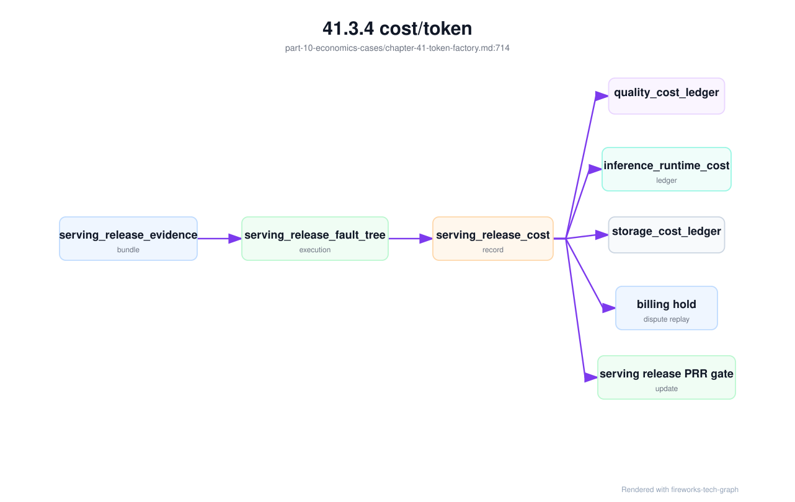
这个对象能纠正两个经济误判。第一个误判是“fallback 成功所以没有损失”：如果 fallback 模型返回 200 但工具调用格式不同、引用质量下降或输出更长，用户价值和毛利都可能下降。第二个误判是“回滚完成所以事故结束”：若只回滚 route，没有回滚 tokenizer/template/cache/usage schema，低质量或账单漂移可能继续发生。Token Factory 需要把这些组合损失写出来，才能判断下一次发布是否需要更严格 bundle gate、更多热回滚容量或更窄 canary。
数据和模型产物供应链事故也会改变 token 经济性。旧权重、旧 tokenizer、旧 RAG 索引或受限数据缓存继续被调度使用时，问题不一定表现为 5xx；它可能表现为 token 计量漂移、质量回归、合规风险、冷启动变慢、回滚失败或客户账单争议。supply_chain_incident_cost_record 应把这些成本从普通存储费用中拆出来：
supply_chain_incident_cost_record:
record_id: scicr-20260620-artifact-recall-001
trigger:
reason: artifact_recall_or_tokenizer_bug_or_data_deletion_or_rag_index_permission_fix
supply_chain_invalidation_evidence: scie-20260620-af-chat-large-r3
cache_invalidation_record: cir-af-chat-large-20260620-001
affected_scope:
serving_releases: [af-chat-large-20260619-r3]
endpoints: [af-chat-large-prod]
tenants: measured_or_sampled
resource_pools: [inference-premium-a]
cost_breakdown:
invalid_cache_served_token_cost: calculated_if_any
token_count_reconciliation_cost: calculated_if_tokenizer_changed
forced_cache_rewarm_cost: calculated
cold_start_or_capacity_loss_cost: calculated
rag_index_rebuild_cost: calculated_if_rag
checkpoint_or_artifact_retention_extension_cost: calculated
compliance_review_and_customer_credit_cost: calculated_if_needed
revenue_treatment:
billing_hold_required: true_or_false
affected_invoice_windows: recorded
credit_or_rebill_policy: applied_if_needed
ledger_updates:
storage_cost_ledger: append
inference_runtime_cost_ledger: append_if_serving_impacted
quality_cost_ledger: append_if_quality_regressed
security_cost_ledger: append_if_boundary_violation
production_readiness_review: update_if_preventable
这个记录能防止把供应链事故误算成“存储成本上升”。强制重建 cache 会增加冷启动和对象存储请求，延长旧 checkpoint 保留会增加容量成本，RAG 索引重建会消耗 embedding 和向量库写入，tokenizer 修复会触发 usage replay 和账单冻结，模型 artifact 召回会导致 canary 暂停或回滚。这些成本都来自同一个供应链事件，应该进入同一张经济表，而不是分散在存储、推理、客服和财务报表里。
供应链成本还要区分“撤销成本”和“旧对象继续服务成本”。前者包括 cache rewarm、registry replay、RAG index rebuild、checkpoint 保留延长和工程响应；后者包括错误 token 计量、低质量回答、合规风险、客户信用、账单争议和高价值流量降级。很多团队只记录前者，因为它能在基础设施账单中看到；真正影响商业结果的往往是后者。Token Factory 的账本必须把撤销窗口内的对象可达性作为成本维度。
supply_chain_revoke_economics:
window: 2026-06-20T10:00Z/2026-06-20T12:00Z
linked_records:
supply_chain_fault_tree_execution: scfte-20260620-001
supply_chain_invalidation_evidence_bundle: scieb-af-chat-large-20260620-001
supply_chain_incident_cost_record: scicr-20260620-artifact-recall-001
object_reachability:
old_artifact_reachable_until: measured_or_none
old_tokenizer_reachable_until: measured_or_none
old_rag_index_reachable_until: measured_or_none
running_replica_verification_lag_ms: measured
cache_scan_coverage: measured
revoke_execution_cost:
registry_pointer_replay_cost: calculated
scheduler_block_and_relabel_cost: calculated
forced_cache_evict_and_rewarm_cost: calculated
replacement_capacity_cost: calculated
engineering_response_cost: measured
old_object_service_cost:
low_quality_or_wrong_template_token_cost: calculated_if_served
token_count_reconciliation_cost: calculated_if_tokenizer_changed
unauthorized_context_exposure_cost: estimated_if_rag_acl_failed
billing_hold_and_invoice_replay_cost: calculated
customer_credit_or_support_cost: calculated_if_customer_visible
investment_signal:
add_contract_acceptance_gate: true
add_running_digest_sampling: true
increase_hot_rollback_capacity: review
improve_cache_scan_parallelism: review
这个模型把一次撤销事故转化为工程投资信号。若主要成本来自 cache rewarm，可以优化分层缓存和预热策略；若主要成本来自 running replica 验证滞后，应增加 loaded digest 采样和 drain 协议；若主要成本来自 billing replay，说明 tokenizer/template 与 usage schema 的发布耦合不够；若主要成本来自 RAG ACL，说明索引权限快照和检索决策需要更强门禁。经济模型不只是给事故“算账”，还要指出哪项工程投资能降低下一次损失。
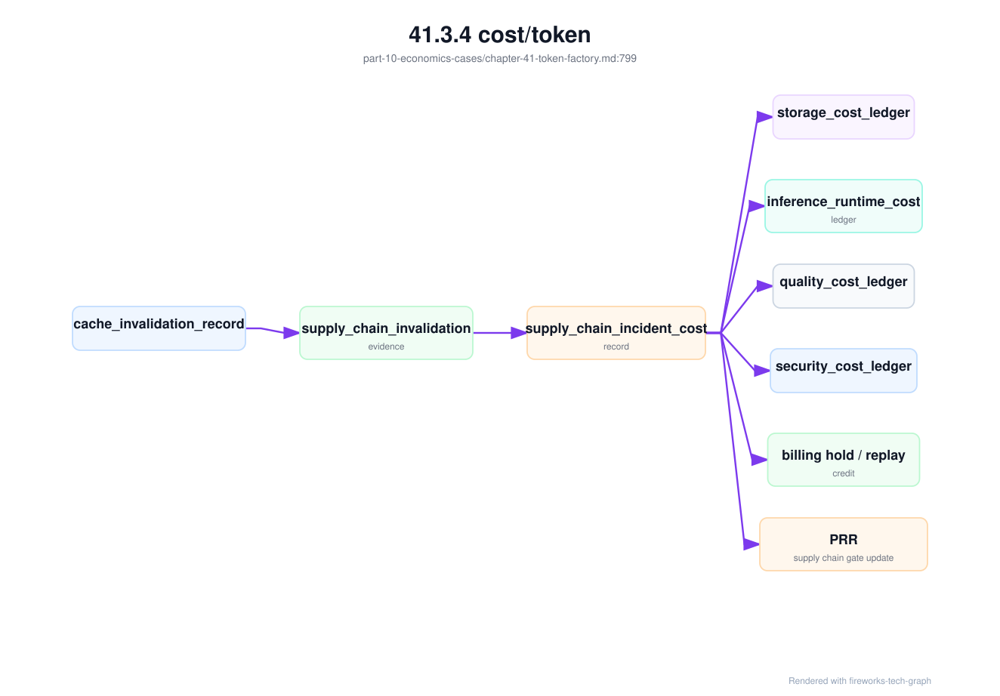
41.3.5 revenue/token¶
revenue/token 表示每个 token 带来的收入或业务价值。对外 MaaS 平台可能按 input token、output token、reasoning token、模型等级、上下文长度和专属实例收费；企业内部平台可以把收入替换为内部结算、成本节省、效率提升或业务结果。无论哪种模式，都需要让 token 产出与价值单位建立关系。
revenue/token 不能脱离场景。同样一千个 token，用于代码生成、智能客服、金融研报、广告创意、Agent 自动化或内部问答，价值差异可能很大。一个低价通用模型可能带来大规模调用，一个高价专业模型可能调用少但价值高。平均 revenue/token 只能作为入口，真正决策要按模型、租户和业务线拆分。
收入口径还要处理折扣、免费额度、包月套餐、失败请求、内部调用和渠道分成。客户看到账单时按产品规则付费，平台看成本时按资源消耗付费，两者之间的差异就是毛利治理空间。若免费额度被高成本长上下文请求消耗，或者低价套餐被高成本模型占满，revenue/token 会迅速失真。
对于内部 AI Factory，revenue/token 可以转化为 value/token。比如客服场景看工单解决率和人工节省，代码助手看开发效率和缺陷率，数据分析 Agent 看分析周期缩短。内部价值不容易像外部收入那样精确计费，但仍要建立估算模型，否则资源分配会被“谁声音大”决定。
revenue/token 还要与质量绑定。低质量 token 会带来退款、人工接管、客户流失、安全风险和品牌损失；高质量 token 可以支撑更高定价、更高留存和更强差异化。Token Factory 视角不是鼓励生产更多 token，而是让每个 token 的价值和成本都可被讨论。
收入模型也要接受负反馈。若某类高收入请求频繁触发 SLO 违约或人工赔付，账面 revenue/token 可能高，真实贡献却下降。收入必须和服务质量、赔付、客户续约和支持成本一起看。
还要建立滥用经济模型。Stolen key、免费额度被刷、prompt flood、长上下文轰炸、Agent 循环调用、批量接口误用和 denial-of-wallet，会让平台产生大量成本但未必产生收入。它们经常穿过“系统可用”指标，因为请求可能都是 2xx，只是经济上异常。Token Factory 应把这些流量标记为 abuse_or_anomaly_tokens，并计算对预算、毛利和 error budget 的影响。
abuse_loss =
generated_token_cost(suspicious_generated_tokens)
+ prefill_cost(suspicious_input_tokens)
+ third_party_provider_cost(suspicious_provider_calls)
+ reserved_capacity_displacement_cost(impacted_premium_requests)
+ investigation_and_credit_cost(security_incident)
adjusted_revenue_per_token =
recognized_revenue / (billable_tokens + abuse_or_anomaly_tokens_weighted)
滥用经济模型不是为了把所有异常都转嫁给客户，而是为了让平台能快速止血和定责。若异常来自客户 key 泄露，可能触发 credential rotation、billing hold 和争议流程；若来自平台限流缺陷，可能需要退款和策略修复；若来自产品免费额度设计，可能需要调整 guardrail。没有滥用账本，平台只会在月末发现毛利异常。
滥用和 denial-of-wallet 还应进入 abuse_cost_ledger。它把异常 token、异常 provider 调用、预算消耗、受影响租户、billing hold 和争议 replay 串起来。这样平台能在小时级别发现经济异常，而不是月末看毛利才发现免费额度被刷、长上下文攻击或 Agent 循环调用。
abuse_cost_ledger:
window: 2026-06-20T10:00Z/2026-06-20T11:00Z
incident: dow-20260620-001
evidence:
denial_of_wallet_incident_record: dow-20260620-001
security_evidence_bundle: seb-20260620-001
billing_dispute_replay: bdr-20260620-001
policy_decision_records: sampled
suspicious_usage:
input_tokens: measured
output_tokens: measured
provider_calls: measured
agent_steps: measured_if_applicable
cost_impact:
generated_token_cost: calculated
provider_cost: calculated
displaced_premium_capacity_cost: calculated
investigation_and_credit_cost: calculated
resolution:
billing_hold: active_or_closed
tenant_chargeable: true_false_or_split
platform_policy_fix_required: true_or_false
这个账本能把“安全异常”转成经营动作：吊销 key、关闭 provider route、收紧预算、退款或追偿、修复 SDK、调整免费额度。对 AI Factory 来说，经济异常往往比技术错误更早暴露滥用；如果成本系统不能按小时级别识别异常 token，安全团队会失去最有效的早期信号。
denial_of_wallet_incident_record 应把一次经济型攻击或误用写成可定责对象。它不同于普通安全事件记录：重点不是只有“谁访问了什么”，还包括“谁的预算被消耗、哪些成本本应被阻断、哪些高价值请求被挤占、哪些 usage 需要 hold、哪些 provider 成本不可追回”。这类事故如果只进入安全工单，最后会在财务月结时变成毛利异常；如果只进入账单系统，又无法解释凭据和策略责任。Token Factory 需要把它放在安全、计费和 SRE 之间。
denial_of_wallet_incident_record:
incident_id: dow-20260620-001
detection:
first_signal: spend_velocity_alert
detected_by: gateway_budget_guard
window: 2026-06-20T10:00Z/2026-06-20T10:18Z
scope:
tenant: enterprise-a
projects: [support-copilot-prod]
credentials: [key_6f2c_redacted]
endpoints: [chat_completions, agent_runs]
route_pools: [inference-premium-a]
providers: [third-party-x-if_any]
evidence:
security_evidence_bundle: seb-20260620-001
security_policy_fault_tree_execution: spfte-sec-20260620-001
egress_provider_decisions: sampled_or_full
policy_decision_records: sampled_or_full
metering_events: immutable_refs
usage_delta:
suspicious_input_tokens: measured
suspicious_output_tokens: measured
suspicious_reasoning_tokens: measured_if_available
suspicious_provider_calls: measured
suspicious_agent_steps: measured_if_applicable
displaced_premium_requests: estimated_or_measured
responsibility:
likely_domain: leaked_customer_key_or_platform_policy_gap_or_free_quota_design_or_unknown
tenant_chargeability: chargeable_or_not_chargeable_or_split_pending_replay
billing_hold: active
containment:
credentials_frozen: true
provider_fallback_disabled: true_if_relevant
max_output_reduced: true_if_relevant
agent_step_limit_applied: true_if_relevant
economic_impact:
token_cost: calculated
provider_cost: calculated
capacity_displacement_cost: calculated
investigation_and_support_cost: calculated
credit_or_refund_reserve: calculated_if_needed
这个对象使定责不再依赖口头判断。若 responsibility.likely_domain 是 leaked customer key，平台仍可能先做 billing hold，等 billing_dispute_replay 关闭后再决定正常计费或分摊；若是 platform policy gap，异常 usage 应更多进入内部损失和策略修复；若是 free quota design，说明产品 guardrail 失效，成本应该进入产品策略评审。相同的 token 成本，在不同责任边界下对应完全不同的财务和工程动作。
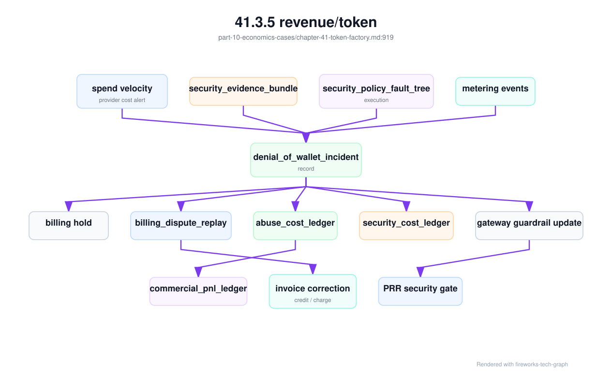
abuse_cost_ledger 也要区分不同成本层。第一层是直接推理成本，包括 input/output/reasoning token、prefill、decode 和 KV 占用。第二层是外部 provider 成本，因为 provider 往往按更高价格或更严格合同结算，且不一定能追回。第三层是容量置换成本：异常流量占用 premium pool 后，正常高价值请求被排队、降级或 fallback。第四层是处置成本：安全值班、客户沟通、账单重算、credit reserve、产品策略变更。只看 direct token cost，会系统性低估 denial-of-wallet 的真实损失。
abuse_cost_ledger:
ledger_id: acl-20260620-001
window: 2026-06-20T10:00Z/2026-06-20T11:00Z
incident: dow-20260620-001
cost_layers:
direct_inference:
prefill_cost: calculated
decode_cost: calculated
kv_occupancy_cost: calculated
failed_or_cancelled_generation_cost: calculated
provider:
provider_request_cost: calculated
provider_minimum_commit_burn: calculated_if_applicable
provider_egress_audit_cost: calculated_if_contract_requires
displacement:
premium_queue_delay_cost: calculated
fallback_to_higher_cost_model: calculated
lost_or_degraded_requests: measured_or_estimated
response:
investigation_cost: calculated
support_and_customer_comm_cost: calculated
billing_replay_cost: calculated
credit_or_refund_reserve: calculated_if_needed
allocation:
tenant_chargeable: pending_replay
platform_absorbed: pending_replay
product_guardrail_cost: pending_replay
actions:
gateway_guardrail_update: required_if_policy_gap
pricing_or_free_quota_review: required_if_product_gap
prr_gate_update: required_if_launch_gap
这个 ledger 的输出不应只给财务。Gateway 需要它判断哪些 guard 真正降低损失，产品需要它调整免费额度和试用策略，SRE 需要它评估异常流量是否挤占 error budget，商业团队需要它解释客户账单。一个好的 denial-of-wallet 闭环，会在小时级别产生账本，在日级别完成责任 replay，在周级别关闭 guardrail 和 PRR 行动项。若只能在月末毛利报表中看到异常，平台已经错过了止血窗口。
商业化经营还需要 commercial_pnl_ledger。Token Factory 的账本解释 token、GPU、质量、安全和可靠性成本，但商业负责人还需要按产品线、客户、合同和交付模式看 P&L：收入来自哪里，折扣和免费额度消耗多少，SLA credit 吃掉多少毛利，客户支持和私有化交付成本是否被低估，预留容量和库存风险是否被正确分摊。没有这张账本，平台可能在技术上优化了 cost/token，却仍然因为折扣、赔付、支持和交付成本而商业倒挂。
commercial_pnl_ledger:
period: 2026-06
scope:
business_model_profile: bmp-enterprise-maas-standard-v2
customer_segment: enterprise
products:
- maas_premium
- private_rag_addon
revenue:
recognized_usage_revenue: calculated
subscription_or_commit_revenue: calculated
private_delivery_revenue: calculated_if_applicable
professional_service_revenue: calculated_if_applicable
contra_revenue:
free_quota: calculated
discount: calculated
sla_credit: linked_to_sla_credit_replay
refund_or_billing_adjustment: linked_to_billing_dispute_replay
cost_of_service:
token_factory_cost: linked_to_token_ledger
inference_runtime_cost_ledger: linked
reliability_cost_ledger: linked
quality_cost_ledger: linked
security_cost_ledger: linked
abuse_cost_ledger: linked_if_any
support_cost: calculated
private_deployment_cost: linked_to_private_deployment_acceptance_record
offline_release_bundle_cost: linked_to_offline_release_bundle_manifest
field_patch_cost: linked_to_field_patch_execution_record
reserved_capacity_and_inventory_cost: calculated
outputs:
gross_margin: calculated
margin_rate: calculated
cost_per_successful_task: calculated_if_task_based
pnl_risks:
- high_sla_credit_rate
- support_cost_growth
- private_customization_cost
- low_utilization_reserved_capacity
这张账本的价值在于防止“局部盈利幻觉”。例如某个 MaaS 客户的 token revenue 很高，但它购买了高 SLA、专属容量、长审计保留和强支持，如果 SLA credit、reserved capacity 和支持成本不进入 P&L，就会高估毛利；某个私有化项目合同金额很大，但每次升级都需要现场专家、离线镜像重做和客户环境调试，如果 private deployment cost 不进入账本，项目会在长期维护期亏损；某个 Agent 平台任务单价很高，但失败重试、人工接管和工具外部 API 成本大，必须用 cost per successful task 重新评估。
commercial_pnl_ledger 也能反向约束产品承诺。若高 SLA 产品的赔付率长期高于可靠性预防成本，应该增加冗余、收紧准入或提高价格；若私有化交付的定制成本持续上升，应该减少特殊分支、加强标准交付包或提高专业服务定价；若免费额度经常被高成本长上下文或 Agent 循环消耗，应该调整产品 guardrail。商业 P&L 不是财务季报，而是 AI Factory 的产品控制面。
私有化升级失败应生成 private_delivery_incident_cost_record。这类事故经常没有大规模 5xx，也不一定产生大量 token 浪费，但会消耗现场专家、客户维护窗口、补丁制作、离线包重打、数据迁移回滚、诊断脱敏、客户沟通和潜在 credit。若只看平台稳定态 cost/token，这些成本会被完全隐藏；若只看项目收入，又会高估私有化毛利。成本记录要把工程事实和商业事实连起来。
private_delivery_incident_cost_record:
record_id: pdicr-enterprise-a-20260620-001
trigger:
support_ticket: inc-enterprise-a-upgrade-017
failure_class: offline_upgrade_failure_or_field_patch_regression
private_delivery_lifecycle_contract: pdlc-enterprise-a-202606
evidence:
offline_release_bundle_manifest: orb-ai-factory-2026-06-enterprise-a
offline_import_record: oir-enterprise-a-20260620-001
offline_upgrade_rehearsal: offline-upg-enterprise-a-202606
private_delivery_diagnostic_export: pdde-enterprise-a-20260620-001
field_patch_execution_record: fper-enterprise-a-runtime-20260620-001_if_any
cost_breakdown:
support_engineer_hours: calculated
onsite_or_remote_session_cost: calculated_if_applicable
offline_bundle_rebuild_cost: calculated_if_repacked
migration_rollback_or_forward_fix_cost: calculated
cache_rewarm_and_validation_cost: calculated
customer_maintenance_window_extension_cost: calculated_if_contractual
sla_credit_or_service_credit_reserve: calculated_if_applicable
responsibility_split:
supplier_product_defect: true_false_or_partial
customer_environment_drift: true_false_or_partial
unsupported_manual_change: true_false_or_partial
ledger_updates:
commercial_pnl_ledger: append
reliability_cost_ledger: append_if_slo_or_support_sla_impacted
security_cost_ledger: append_if_export_or_secret_boundary_involved
production_readiness_review: update_if_preventable_gap
这个对象的重点不是追责，而是防止私有化成本失真。若多次事故都来自客户环境漂移，合同和验收边界需要收紧；若多次事故来自离线包缺少依赖或导入工具不稳定，产品需要投资打包和导入自动化；若现场补丁成本持续增长，LTS 和 release train 策略需要调整。私有化业务能否规模化，不取决于第一单合同金额，而取决于这些长期成本是否被看见并能下降。
41.3.6 GPU 利用率¶
GPU 利用率是 Token Factory 的重要变量，但它不是一个单一数字。SM utilization、HBM bandwidth、显存占用、KV Cache 水位、PCIe/NVLink、功耗、温度、kernel occupancy、batch 队列和实例空闲时间，都可能解释“GPU 是否被有效使用”。只看平均 GPU utilization，容易掩盖真正瓶颈。
在线推理尤其如此。某个服务 SM 利用率不高，但 HBM bandwidth 已接近瓶颈；某个模型显存占用高，无法继续放大 batch；某个长上下文场景 KV Cache 耗尽，导致排队和驱逐；某个服务 GPU 看似忙，但大部分时间消耗在低价值重试上。利用率必须和 token 产出、SLO、质量和成本一起解释。
提高利用率也有代价。更大的 batch 可以降低 cost/token，却可能恶化 TTFT；更多模型混部可以减少空闲，却增加资源争抢和故障定位难度；更高超卖可以提升短期产能，却放大长尾延迟；减少冗余可以提高平均利用率，却降低事故恢复能力。利用率优化必须接受 error budget 和 SLA 约束。
训练场景的利用率也要区分。大规模训练的 GPU idle 可能来自数据加载慢、checkpoint 慢、NCCL 等待、rank skew 或坏节点；不是所有 idle 都能靠多塞任务解决。若为了提高利用率把在线推理和大训练粗暴混部，可能造成两边都不稳定。利用率指标必须带 workload 语义。
更成熟的做法，是把 GPU 利用率转化为 effective GPU hours。有效 GPU 小时只计算产生有效 token、有效训练 step 或有效评测结果的资源消耗；失败重跑、长时间 pending 后失败、空转、低效拓扑和异常重试都被标记为浪费。这样，利用率才从设备指标变成经济指标。
利用率还应按资源池解释。在线推理池需要冗余和低延迟，训练池需要完整拓扑，批量池可以追求更高填充率。把所有 GPU 混在一起算平均利用率，会掩盖每类资源池的真实目标。
41.3.7 推理毛利¶
推理毛利可以粗略理解为 token 收入减去 token 成本。它不是财务部门独有指标，而是推理平台是否可持续扩张的核心反馈。若 revenue/token 覆盖不了 cost/token，业务增长会放大亏损；若毛利看似健康但 SLO 退化，客户留存和未来收入会受损；若毛利依赖免费资源或隐藏成本，就不可持续。
推理毛利的收入端由定价、模型等级、客户结构、套餐、免费额度、失败赔付和业务价值决定。成本端由 GPU、电力、机房、推理引擎效率、batching、缓存、KV Cache、模型大小、网络存储、运维和故障浪费决定。二者之间没有天然同步关系，必须通过报表和控制策略持续校准。
毛利分析应按模型和请求形态拆分。短问答、长上下文、代码生成、批量推理、Agent、reasoning 模型、多模态模型，对 GPU 和 token 的消耗完全不同。统一价格可能便于销售，但会让高成本场景侵蚀整体毛利。平台需要知道哪些场景赚钱，哪些场景需要限额、调价或工程优化。
改善毛利的路径有很多：模型量化、蒸馏、路由、缓存、continuous batching、prefix cache、PD 分离、资源池分层、批量推理错峰、定价调整、减少冷启动、降低失败重试、提升能效和优化机房 PUE。每条路径都有副作用，必须在质量、安全和 SLO 下验证。
推理毛利还影响扩容决策。若某个模型的毛利稳定、需求增长、SLO 接近容量边界，扩容是合理投资；若某个业务 token 很多但毛利为负，盲目扩容只会放大损失。Token Factory 把“要不要买更多 GPU”变成可计算问题，而不是单纯看需求曲线。
毛利也要区分短期和长期。新模型早期可能毛利不高，但能带来战略客户、数据反馈或产品入口；成熟模型若长期毛利为负，则必须解释其战略价值。经济模型提供事实，不自动替代业务判断。
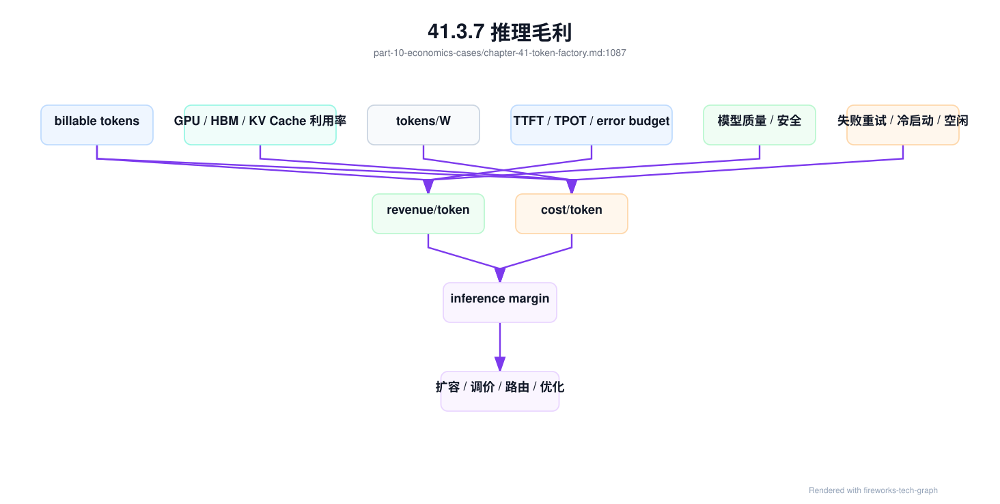
41.3.8 训练 ROI¶
训练 ROI 比推理毛利更难度量，因为训练成本通常先发生，收益可能在模型质量、产品能力、推理收入、内部效率、品牌、数据资产和后续模型迭代中逐步体现。一次预训练、后训练或微调任务，可能消耗大量 GPU 小时、数据处理、人力、评测和机会成本，但收益不一定能在当月财务报表中出现。
训练成本至少包括 GPU 时间、网络存储、数据清洗、实验管理、失败重跑、checkpoint、评测、人力和平台机会成本。失败训练也不一定全是浪费，如果它沉淀了数据质量问题、训练稳定性经验或模型选择证据；但如果没有记录假设、评测和复盘，失败就无法转化为资产。
训练收益要与业务目标连接。一个微调模型可能提升客服解决率，一个压缩模型可能降低推理 cost/token，一个领域模型可能提高客户留存，一个基础模型可能支撑多个产品线。若训练目标只写成“提升 benchmark”，但 benchmark 与业务结果没有关系，ROI 就无法被证明。
评估训练 ROI，应建立从实验到上线的闭环：训练前定义假设、成本预算和评测口径；训练中记录资源消耗、失败和数据版本；训练后进行离线评测、红队、安全和性能验证；上线后观察 revenue/token、cost/token、用户行为和 SLO。没有上线反馈，训练 ROI 只能停留在实验室。
训练 ROI 还要纳入机会成本。相同 GPU 可以用于预训练、微调、批量推理或高毛利在线服务。某个训练任务即使技术上成功，也可能不是当期最优投资。AI Factory 的成熟运营，会把训练队列、推理毛利和业务路线图放在一起决策，让 GPU 投向最能增加长期能力和经济回报的地方。
训练 ROI 需要训练账本，而不是只看任务是否完成。训练账本应记录 allocated GPU hours、effective training GPU hours、wasted GPU hours、checkpoint、评测、上线状态和后续推理收益。否则一次训练成本会停留在 GPU 小时，无法连接到模型质量、推理成本下降或收入增长。
training_roi_ledger:
training_job: exp-20260619-001
model_candidate: af-base-v4-ckpt120000
evidence:
training_lifecycle_event: tle-20260620-001
framework_runtime_matrix: frm-h100-train-20260620
parallelism_plan_record: ppr-llm-20260620-001
placement_commit_record: pcr-exp-20260619-001
launcher_contract: lc-torchrun-h100-202606
rendezvous_evidence: rv-exp-20260620-001
first_effective_step_record: fes-exp-20260620-001
rank_topology_contract: rtc-llm-20260620-001
nccl_env_contract: nec-h100-rdma-20260620
collective_trace_record: optional
communication_critical_path_record: optional
communication_regression_record: optional_if_recent_change
checkpoint_overlap_evidence: optional_if_checkpoint_spike
queue_fairness_ledger: qfl-20260620-0000
training_accounting_reconciliation: acct-20260620-001
training_incident_record: optional
costs:
allocated_gpu_hours: measured
effective_training_gpu_hours: measured
wasted_gpu_hours:
queue_startup: measured
launcher_or_env_error: measured_if_any
rendezvous_failure: measured
no_first_effective_step: measured_if_any
failed_restarts: measured
preemption_lost_progress: measured
placement_degradation: measured
communication_critical_path_idle: measured
rank_topology_violation: measured_if_any
nccl_env_mismatch: measured_if_any
checkpoint_overlap_idle: measured_if_any
storage_cost:
checkpoints: measured
dataset_reads: measured
evaluation_cost: measured
outputs:
checkpoints: [ckpt-step-120000]
evaluation_reports: [eval-report-001]
model_registry_version: optional
business_link:
serving_model: optional
inference_cost_delta: measured_after_launch
revenue_delta: measured_or_estimated
quality_delta: evaluation_summary
opportunity_cost_vs_inference: calculated
这个 ledger 让训练投资能被追踪到后续结果。若训练模型没有上线，ROI 不能按推理收入计算，但仍可记录为研究资产或失败学习；若模型上线后把 cost/token 降低，收益应回写到训练 ROI；若模型质量提升但推理成本上升，业务要判断 revenue/token 是否足以覆盖。训练 ROI 是跨时间窗口的事实链，不是单次作业报表。
训练 ROI 还应吸收调度与生命周期事实。一个任务“成功完成”并不代表投资效率高：它可能长时间等待 gang，placement 降级导致训练吞吐下降，被抢占后丢失大量进度，或者 Slurm accounting 与平台成本口径没有对齐。training_lifecycle_event 说明 GPU 小时在哪个阶段消耗，queue_fairness_ledger 说明等待和借用是否符合资源承诺，placement_commit_record 说明性能是否受拓扑降级影响，training_incident_record 说明失败是否消耗了额外机会成本。把这些事实放入 ROI，训练队列才能和推理毛利在同一张经济表里比较。
训练 ROI 的起点应是 first_effective_step_record，不是 Pod Running、Slurm Running 或容器启动。launcher_contract 能解释启动参数是否来自受控模板，rendezvous_evidence 能解释 world size 和 rank 是否完整，first_effective_step_record 能解释 GPU 何时真正开始产生训练 token。若任务在 rendezvous 前失败，成本应归入启动或调度浪费；若 rendezvous 后首个有效 step 前失败，成本应归入数据、框架或首个 collective；若首个有效 step 后失败，才进入训练稳定性和 checkpoint 恢复分析。这个阶段拆分能防止把启动浪费摊进正常训练成本。
训练通信成本还需要单独拆出来。communication_critical_path_record 证明哪些 collective 真正暴露在 step 关键路径上，rank_topology_contract 说明是否有不可接受的拓扑违反，nccl_env_contract 说明环境是否偏离受控模板，checkpoint_overlap_evidence 说明周期性 spike 是否来自 checkpoint 与通信叠加。只有这些证据齐备，才能把“通信慢”换算成 communication_critical_path_idle，进而进入训练 ROI。否则团队容易把端口利用率、NCCL test 带宽或平均 op 时间误当作成本事实。
这个拆分会改变投资判断。如果大部分浪费来自 rank topology violation，优先投入调度和资源碎片治理；如果来自 NCCL env mismatch，优先投入 runtime 模板和容器准入；如果来自 checkpoint overlap，优先投入存储、异步 checkpoint 或隔离网络；如果来自真实 fabric baseline 退化，才进入网络扩容或维修讨论。Token Factory 的经济模型应帮助团队找到最便宜的有效修复，而不是默认把问题归结为“需要更多 GPU 或更贵网络”。
训练事故还应生成 training_incident_cost_record，作为 training_incident_record 和 training_roi_ledger 之间的桥。事故复盘关注根因和动作，ROI 账本关注投资结果；中间需要一个成本对象把 GPU 小时、checkpoint 回退、队列机会成本、模型发布日期延迟和工程处理成本统一口径。没有它，训练事故很容易只在 SRE 系统里关闭，而没有进入资源治理和商业决策。
training_incident_cost_record:
record_id: ticr-inc-20260620-train-001
training_incident_record: inc-20260620-train-001
training_fault_tree_execution: tfte-inc-20260620-train-001
training_debug_bundle: tdb-exp-20260620-001
affected_investment:
training_job: exp-20260620-031
model_candidate: af-base-v4-ckpt120000
queue: training-prod
resource_pool: h100-rdma-prod
cost_breakdown:
allocated_gpu_hours_during_incident: measured
effective_training_gpu_hours_lost: measured
checkpoint_rollback_gpu_hours: calculated
queue_opportunity_cost_gpu_hours: calculated
storage_and_checkpoint_extra_cost: measured
engineering_response_hours: measured
model_release_delay_days: estimated
attribution:
primary_cost_domain: launcher_or_rendezvous_or_rdma_or_checkpoint_or_model_code
confidence: low_medium_or_high
preventable_by_existing_gate: true_or_false
missing_gate_or_evidence: optional
ledger_updates:
training_roi_ledger: append
queue_fairness_ledger: append_if_capacity_impact
reliability_cost_ledger: append_if_customer_or_slo_impact
acceptance_or_prr_gate: update_if_preventable
这个成本记录会改变事故优先级。一个 10 分钟 NCCL hang 如果影响 512 张 GPU，并导致 checkpoint 回退和下游模型发布延迟，它的成本不应等同于单个服务实例重启；一个首步前失败如果反复发生，虽然没有 loss 回退，却可能消耗大量启动 GPU 小时和队列窗口；一个 checkpoint overlap 如果每小时发生一次，单次 spike 不严重，累计成本可能超过一次明显故障。把事故成本标准化后，团队才能比较“修 runtime 模板”“优化 checkpoint”“扩网络”“增加准入测试”哪一个投资回报更高。
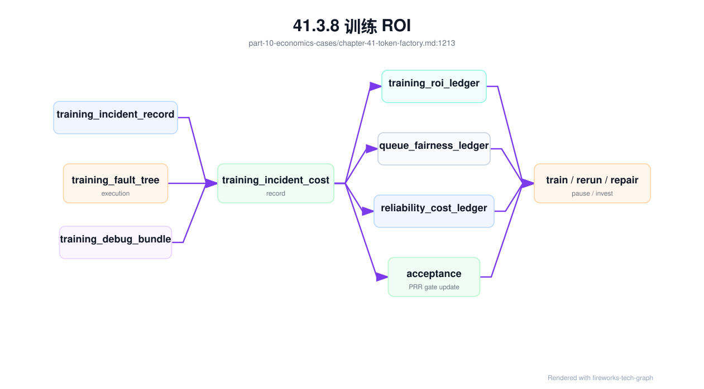
事故成本不应被机械地全部归入“浪费”。如果事故暴露了未知硬件批次问题、补齐了故障树、提升了 checkpoint 恢复策略，部分成本可以记为学习资产；但只有当它产生了可复用规则、测试或门禁时，才有资格这么记录。否则“失败也是经验”会变成掩盖低质量运行的借口。
41.4 工程落地¶
41.4.1 工程实现¶
Token Factory 的工程实现从数据模型开始。每个请求、任务、模型版本、租户、endpoint、replica、GPU pool 和计费计划，都要有稳定标识。计量事件必须记录 input token、output token、reasoning token、cached token、失败状态、延迟、模型版本、路由结果和 trace id。没有这些字段，后续成本和收入都只能粗略平均。
核心账本应采用 token ledger，而不是只存最终账单金额。Ledger 是追加式事实表，记录每个请求或任务产生了哪些 token、这些 token 是否可计费、归属哪个租户和模型、对应哪些成本池。账单、毛利、报表和异常审计都从 ledger 派生。这样，即使价格规则变化，也可以重算账单；即使请求失败，也能保留成本事实。
token_ledger_event:
event_id: evt_001
trace_id: trace-abc
tenant: enterprise-a
project: support-copilot
requested_model: af-chat-large
served_model: af-chat-large-202606
endpoint: af-chat-large-prod
resource_pool: inference-premium-a
token_class:
input: 2380
output_generated: 642
output_delivered: 640
reasoning: 0
cached_input: 512
lifecycle:
close_reason: stop
failure_stage: none
retry_of: null
economics:
billable_input: 1868
billable_output: 640
price_plan: enterprise-standard-2026
cost_pool: gpu-h100-prod-a
Token ledger 要与资源成本账本对齐。资源账本记录 GPU 小时、功耗、资源池、节点、实例、训练作业和推理 endpoint；token ledger 记录 token 产出。两者通过 resource_pool、endpoint、时间窗口和模型版本关联。早期可以按资源池和时间窗口分摊，成熟后再按 replica、请求阶段或 GPU 时间细化。关键是口径公开，并能解释误差。
第二步是建立成本分摊规则。GPU、电力、机房、网络、存储、平台运维和失败浪费可以按不同维度分摊：推理按 token、模型和资源池；训练按 GPU 小时、作业和项目；共享基础设施按容量或实际使用量。规则不必一开始完美，但必须公开、稳定、可复盘，否则业务无法信任报表。
第三步是把 Token Factory 报表接入运营动作。报表至少按模型、租户、资源池和时间窗口展示 tokens/s、tokens/W、cost/token、revenue/token、毛利、SLO、错误率、缓存命中和浪费。发现长上下文成本异常时触发定价或路由评审；发现失败重试成本升高时触发 SRE；发现某模型毛利下降时触发工程优化或产品策略调整。
token_factory_report:
scope:
model: example-llm
tenant: team-a
endpoint: chat-completions
gpu_pool: inference-prod
metering:
input_tokens: measured
output_tokens: measured
reasoning_tokens: measured_if_applicable
failed_tokens: measured
cached_tokens: measured
economics:
cost_per_token: calculated
revenue_per_token: calculated
gross_margin: calculated
constraints:
ttft: measured
tpot: measured
error_budget: tracked
quality_gate: required
第四步是做审计闭环。计量系统要能对账：网关日志、推理服务日志、计费事件和成本报表是否一致；异常流量、免费额度、内部调用和失败请求是否被正确分类。Token Factory 一旦用于定价和毛利，数据质量就必须达到财务和工程共同可接受的标准。
第五步是建立治理动作。对毛利为负的模型，触发定价、路由或工程优化评审；对失败 token 异常增长的租户，触发限流和故障诊断；对 tokens/W 明显偏离的资源池，触发能效和硬件检查。报表必须连接动作，否则只是事后解释。
第六步是保留人工校正机制。早期成本分摊难免粗糙，特殊客户和内部项目也可能需要例外处理。系统应记录例外原因、审批人和有效期，避免临时调整变成永久黑箱。
经济模型也应明确阶段成本。Input token 主要消耗 prefill，output token 主要消耗 decode，cached input token 可能降低 prefill 但仍有缓存占用成本，失败 token 可能没有收入但有资源消耗。把所有 token 用同一成本平均，会误导定价和优化。
request_cost =
prefill_cost(input_tokens - cached_input_tokens)
+ cache_cost(cached_input_tokens, kv_cache_lifetime)
+ decode_cost(output_generated_tokens)
+ gateway_platform_cost(request_count, stream_duration)
+ rag_cost(embedding, vector_search, rerank, context_tokens)
+ agent_cost(model_calls, tool_calls, sandbox_runtime, external_api)
+ model_artifact_distribution_cost(cache_miss, model_load_time)
+ failure_waste_cost(failure_stage, retry_count)
+ reliability_risk_cost(error_budget_burn, incident_impact)
gross_margin =
billable_revenue(input_tokens, output_tokens, plan)
- allocated_request_cost
这个公式不要求一开始精确到每个 kernel，但要求团队承认不同阶段成本不同。长上下文 RAG 的问题通常在 prefill 和 KV Cache，长文生成的问题通常在 decode，Agent 的问题通常在多次调用和失败重试。成本模型若能按阶段切开，工程优化才会指向正确位置。
RAG/Agent 成本尤其不能被平均到 LLM token 里。RAG 的成本包括 query embedding、向量检索、关键词检索、metadata/ACL filter、rerank、context assembly、额外 input token、引用校验和索引维护；Agent 的成本包括多次模型调用、工具执行、沙箱运行、外部 API、重试、人工确认、回滚和安全审计。一个请求最终只输出 200 个 token，但内部可能消耗了数万 input token 和几十次工具调用。若报表只展示 output token 成本，业务会低估 Agent 的真实经济负担。
rag_agent_cost_attribution:
attribution_id: rac-20260620-0001
scope:
tenant: enterprise-a
application: support-copilot
task_slice: rag_agent_support
window: 2026-06-20T00:00Z/2026-06-20T01:00Z
rag_inputs:
retrieval_permission_decisions: sampled
rag_context_snapshots: sampled
embedding_requests: measured
rerank_pairs: measured
selected_context_tokens: measured
truncated_context_tokens: measured
agent_inputs:
agent_budget_ledgers: sampled
agent_tool_execution_records: sampled
model_calls_per_successful_task: measured
tool_calls_per_successful_task: measured
sandbox_runtime_seconds: measured
external_api_calls: measured
derived:
rag_cost_per_successful_answer: calculated
agent_cost_per_successful_task: calculated
permission_filter_cost: calculated_or_allocated
failed_run_waste_cost: calculated
这个归因表能支持两类决策。第一类是架构决策：某个客服任务到底该用强模型直接回答，还是用 RAG + 小模型，还是用 Agent + 工具；比较时必须用每成功任务成本，而不是单次 LLM cost。第二类是治理决策：若某个 Agent 的 failed_run_waste_cost 很高，应该优化 planning、工具 schema 或预算停止条件；若 RAG 的 truncated_context_tokens 很高，应该优化 chunk、rerank 或 context budget，而不是盲目增加上下文窗口。
RAG/Agent 事故还需要 rag_agent_incident_cost_record。rag_agent_cost_attribution 适合做窗口级归因，事故成本记录则解释一次具体事件：旧 ACL 导致越权召回，context 截断导致错误引用，Agent 工具重复提交工单，工具策略漂移造成外部写操作，预算循环烧掉 provider cost，或者人工接管突然上升。它把第 39 章的故障树输出转成可经营事实，让团队知道应该投资索引发布、工具策略、预算控制、人工确认还是评测样本。
rag_agent_incident_cost_record:
record_id: raicr-20260620-001
incident_id: inc-20260620-rag-agent-001
fault_tree_execution: rafte-20260620-001
affected_scope:
tenant: enterprise-a
application: support-copilot
task_slices: [rag_citation, support_agent_tooling]
window: incident_window
evidence_refs:
rag_agent_evidence_bundle: raeb-20260620-001
rag_index_release_contract: rirc-support-kb-20260620
retrieval_acl_invalidation_event: raie-20260620-001_if_applicable
rag_context_replay_bundle: rcrb-20260620-0007_if_applicable
agent_tool_policy_contract: atpc-support-agent-20260620
agent_trajectory_replay_bundle: atrb-20260620-0042_if_applicable
cost_components:
low_quality_or_wrong_answer_tokens: estimated
extra_input_tokens_from_bad_context: measured_or_estimated
rerank_and_embedding_replay_cost: measured
failed_agent_run_tokens: measured
wasted_tool_runtime_cost: measured
external_api_spend: measured
sandbox_runtime_cost: measured
duplicate_side_effect_cleanup_cost: measured_or_estimated
human_handoff_cost: measured_or_estimated
customer_credit_or_billing_hold: measured_or_policy_defined
remediation_and_retest_cost: measured
prevention_economics:
would_have_been_blocked_by_contract_gate: true_or_false
avoided_future_loss_after_fix: estimated
recommended_investment:
- strengthen_rag_index_release_gate
- require_agent_tool_policy_prr_drill
- improve_context_replay_coverage
derived:
cost_per_failed_task: calculated
cost_per_successful_task_delta: calculated
gross_margin_impact: calculated
这个记录能避免两个极端。第一是把所有 RAG/Agent 事故都算成模型质量成本，导致团队不断换模型，却不投资索引、权限、工具和预算。第二是把所有治理成本都当成“平台开销”，看不到它避免了多少低质量 token、外部 API 浪费和人工接管。经济账本应把事故损失、响应成本、预防成本和避免损失分开。只有这样，PRR 中增加 tool policy 演练、context replay 采样或 ACL 失效阻断，才有可解释的 ROI。
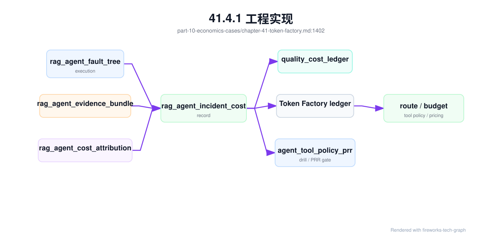
训练成本也应拆出存储路径：
training_storage_cost =
dataset_read_cost(dataset_manifest, bytes_read, request_count)
+ checkpoint_write_cost(checkpoint_size, interval, metadata_ops)
+ checkpoint_restore_cost(restore_count, restore_duration)
+ artifact_retention_cost(retention_policy, age, replicas)
+ storage_induced_waste(gpu_idle_seconds_due_to_io)
这能防止一个常见误判：训练贵不一定是模型计算贵，也可能是数据格式、checkpoint 策略或 artifact 生命周期让 GPU 等存储。把存储浪费显式写入 ledger，平台才会投资 reshard、cache、manifest、预热和清理自动化。
更完整的 storage_cost_ledger 应把训练和推理共同使用的数据路径纳入同一口径。它不是存储账单的复制，而是把存储行为转成 GPU 时间、ready 时间、失败恢复和长期保留成本。
storage_cost_ledger:
window: 2026-06-20T10:00Z/2026-06-20T11:00Z
scope:
tenant: foundation-model-team
resource_pool: training-prod-h100
workloads: [train-20260620-017, endpoint-af-chat-large-prod]
evidence:
dataset_manifest: dataset-manifest@sha256:example
dataset_lineage_record: dlr-corpus-v3-2-20260620
checkpoint_commit_record: ckpt-step-120000
checkpoint_restore_drill: crd-20260620-ckpt-120000
model_artifact_provenance: map-af-chat-large-20260619-r3
model_artifact_distribution: af-chat-large-20260619-r3
cache_residency: cache-residency-rack-11
cache_invalidation_record: optional
storage_security_boundary: ssb-model-and-training-prod
storage_evidence: storage-ev-20260620-017
cost_components:
dataset_read_backend_cost: calculated
dataset_cache_prewarm_cost: calculated
checkpoint_write_and_restore_cost: calculated
checkpoint_gpu_idle_cost: calculated
artifact_distribution_cost: calculated
model_cold_start_capacity_cost: calculated
orphan_artifact_retention_cost: calculated
local_nvme_reserved_capacity_cost: calculated
dataset_lineage_governance_cost: calculated
checkpoint_restore_drill_cost: measured
artifact_provenance_and_signing_cost: measured
cache_invalidation_and_rewarm_cost: calculated
storage_security_boundary_cost: allocated
outputs:
storage_cost_per_training_token: calculated
storage_cost_per_delivered_token: calculated_if_serving
storage_waste_gpu_hours: calculated
supply_chain_cost_per_release: calculated
cleanup_savings_candidate: calculated
这份 ledger 能回答“为什么应该投入存储工程”。如果 checkpoint pause 造成大量 GPU idle，优化两阶段提交、分片格式或 checkpoint 窗口可能比增加 GPU 更划算；如果模型冷启动导致扩容慢，权重预热和 cache residency 可能直接改善毛利；如果 orphan artifact 和过期 checkpoint 占用高性能路径，清理自动化本身就是降本项目。存储成本的关键不是每 TB 多少钱，而是它如何改变有效 token 和有效训练 step。
供应链相关成本不应被视为“文档成本”。dataset_lineage_governance_cost 购买的是数据可追溯和删除请求可执行，checkpoint_restore_drill_cost 购买的是故障时少丢训练进度，artifact_provenance_and_signing_cost 购买的是模型发布可证明，cache_invalidation_and_rewarm_cost 购买的是回滚和撤销能力，storage_security_boundary_cost 购买的是高价值数据不被随意复制。若这些成本不进入账本，短期看可以省钱，长期会以事故、合规风险、回滚失败和客户信任损失的形式返回。
可靠性成本也应进入经济模型。一次 SLO 违约可能产生赔付、退款、客户支持成本、失败 token、重试 token、GPU 空转、机会成本和后续加固投入；一次训练 incident 可能造成 checkpoint 回滚、队列重排、重复训练和模型发布时间延迟。示例：
reliability_cost =
slo_violation_cost(failed_or_slow_requests, customer_tier)
+ error_budget_burn_cost(error_budget_burn)
+ incident_response_cost(oncall_time, mitigation_resources)
+ retry_and_failure_token_cost(failed_tokens, retried_tokens)
+ wasted_gpu_cost(wasted_gpu_hours)
+ delayed_launch_cost(model_release_delay)
把可靠性成本显式化，可以防止一个常见误判：为了降低 cost/token 而减少冗余、缩短灰度、跳过准入或压缩维护窗口，短期报表会变好，但长期毛利可能被事故吞掉。Token Factory 不是只计算稳定态成本，还要计算风险成本。SRE 事件一旦进入 ledger，可靠性投入才有经济解释。
可靠性成本应落成 reliability_cost_ledger。它把 incident_record、reliability_evidence_bundle、slo_budget_ledger、baseline_invalidation_record、maintenance_window 和 capacity_activation_record 连接到 token、GPU 小时和收入影响。这个 ledger 不是为了把每次事故都精确到财务小数点，而是为了让工程决策能比较数量级：一次跳过灰度节省了多少时间，后续事故消耗了多少 GPU 小时和客户信任；一次准入复测延迟上线，避免了多少重跑和赔付。
reliability_cost_ledger:
window: 2026-06
scope:
service: maas-chat-completions
resource_pool: inference-premium-a
fault_domain: dc-a/rack-12
evidence:
incidents: [inc-20260620-ttft-001]
reliability_evidence_bundles: [reb-20260620-ttft-rack12]
slo_budget_ledger: slo-maas-chat-202606
baseline_invalidation_records: [bir-20260620-001]
container_runtime_change_records: [crc-gpu-runtime-20260620]
gpu_device_visibility_reconciliation: sampled
gpu_nic_topology_evidence: sampled_if_training
capacity_activation_records: [dc-a-rack-12-2026-06]
losses:
failed_or_slow_billable_tokens: measured
failed_or_slow_requests: measured
wasted_gpu_hours: calculated
requeued_or_retried_gpu_hours: calculated
compensation_or_credit: calculated_if_applicable
support_and_oncall_cost: calculated
delayed_capacity_cost: calculated
delayed_model_launch_cost: calculated_if_training_related
runtime_visibility_mismatch_cost: calculated_if_detected
topology_misplacement_gpu_idle_cost: calculated_if_training
prevention_and_control_cost:
acceptance_retest_cost: measured
canary_capacity_cost: measured
hot_spare_cost: measured
container_runtime_reconciliation_cost: measured
topology_evidence_collection_cost: measured
runbook_and_drill_cost: measured
derived:
reliability_cost_per_delivered_token: calculated
incident_cost_per_successful_answer: calculated
container_runtime_risk_cost_per_token: calculated_if_applicable
prevention_cost_vs_loss_avoided: estimated_policy
这个账本会改变成本优化的讨论方式。若某个资源池长期 reliability_cost_per_delivered_token 高，平台应查资源健康、变更节奏、准入覆盖和故障域设计，而不是只压低 GPU 单价；若 prevention cost 很高但事故损失更低，说明可靠性策略可能过度；若 delayed_capacity_cost 持续高，说明采购、机房、准入或资源池激活链路存在瓶颈。可靠性不再是“多花的钱”，而是影响成功 token 成本的生产变量。
容器 runtime 和拓扑证据也要进入经济口径。一次 visible_device_mismatch 可能让租户用到未授权 GPU、造成账单争议或安全事故；一次 GPU/NIC 拓扑错配可能让训练 step time 增加，消耗大量无效 GPU 小时；一次 CDI spec 失效可能让扩容副本全部卡在 CreateContainerError，推理峰值流量下 TTFT 违约。把这些事件记入 reliability_cost_ledger，可以证明为什么要投入 runtime 准入、设备可见性对账和拓扑证据采集。它们不是额外文书，而是在保护 token 生产线不被底层漂移吞噬。
资源声明事故应单独计入 resource_claim_incident_cost_record。它位于调度和 runtime 之间：ResourceClaim 或 extended resource request 没有被正确准入、绑定到错误 GPU class、MIG claim 暴露整卡、拓扑约束长期等待、计量标签没有继承到 Pod/GPU UUID，都会造成真实成本。它们不一定表现为容器启动失败，很多时候只是任务 pending、扩容不足、低优任务占住高价资源、账单 hold 或训练等待时间增加。
resource_claim_incident_cost_record:
incident_id: inc-20260620-claim-001
linked_evidence:
gpu_resource_claim_contract: grcc-code-chat-20260620
resource_claim_admission_record: rcar-20260620-001
resource_claim_fault_tree_execution: rcfte-20260620-001
resource_claim_acceptance_matrix: rcam-gpu-prod-202606
queue_fairness_ledger: qfl-20260620-00
affected_scope:
tenants: [enterprise-a]
queues: [inference-premium, training-prod]
affected_claims: measured
affected_gpu_classes: [h200-long-context-prod]
affected_requests_or_jobs: measured
cost_components:
claim_pending_capacity_gap_cost: calculated
wrong_gpu_class_slo_or_quality_cost: calculated_if_any
mig_boundary_billing_or_security_risk: calculated_if_any
topology_wait_opportunity_cost: calculated_if_training
fallback_or_overflow_provider_cost: calculated_if_inference
billing_hold_and_reconciliation_cost: calculated_if_metering_label_missing
operator_debug_and_retest_cost: measured
prevention_signal:
missing_gate: resource_claim_acceptance_or_admission_dry_run
recommended_prr_gate_update: required_if_gap_found
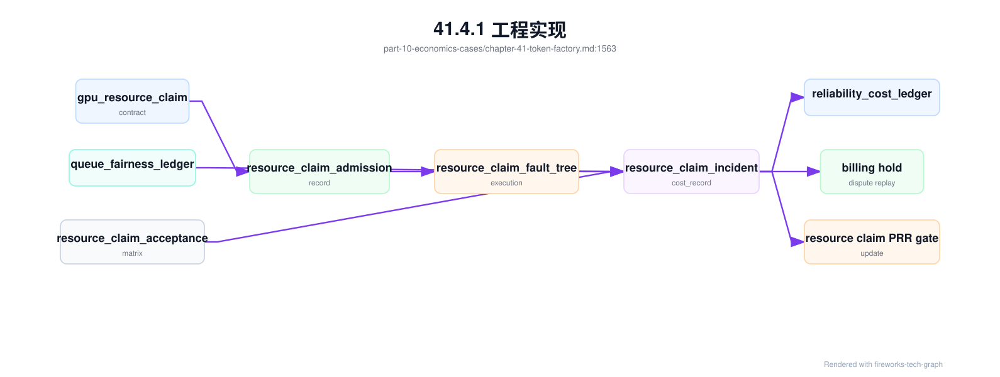
这个对象能防止一个常见误判：把所有 pending 都当作“没有 GPU”。如果 claim pending 的根因是 DeviceClass 过窄，应该修资源画像或 claim 模板；如果是 entitlement 阻断，应该修租户策略或申请流程；如果是 topology wait，应该治理碎片和抢占；如果是计量标签断链，应该先 hold 商业流量而不是继续放量。不同根因对应不同成本和 owner。Token Factory 需要看到这些差异，才能判断该投资调度、准入、资源池、计量还是采购。
当容器 runtime 变更本身造成影响时，应生成 container_runtime_incident_cost_record。它专门计算 Toolkit/CDI/NRI/RuntimeClass/device plugin strategy 变更带来的无效成本：Pod 创建失败导致的扩容缺口，GPU Pod 看错设备导致的租户隔离或账单争议，多卡训练因为 RDMA/GPU 拓扑错配产生的 GPU idle，Operator 升级后 DCGM 标签变化导致的计量断链，以及回滚、复测和客户沟通成本。没有这个对象，runtime 事故会被平均摊进可靠性成本，团队很难判断是否值得投入更严格的准入和 canary。
container_runtime_incident_cost_record:
incident_id: inc-20260620-gpu-runtime-001
linked_evidence:
container_runtime_change_record: crc-gpu-runtime-20260620-001
container_gpu_runtime_fault_tree_execution: cgrfte-20260620-001
container_runtime_change_acceptance: crca-20260620-001
gpu_device_visibility_reconciliation: sampled
oci_runtime_injection_diff: sampled
affected_scope:
node_pool: h100-inference-canary
affected_pods: measured
affected_gpu_hours: calculated
affected_requests: measured_if_inference
affected_training_jobs: measured_if_training
cost_components:
failed_pod_start_capacity_cost: calculated
visible_device_mismatch_billing_risk: calculated_if_any
runtime_rollback_and_retest_cost: measured
training_gpu_idle_due_to_topology_mismatch: calculated_if_any
inference_slo_or_credit_cost: calculated_if_any
observability_reconciliation_cost: calculated_if_metric_labels_changed
prevention_signal:
missing_gate: runtime_canary_or_visibility_reconciliation_or_dcgm_schema_check
recommended_prr_gate_update: required_if_gap_found
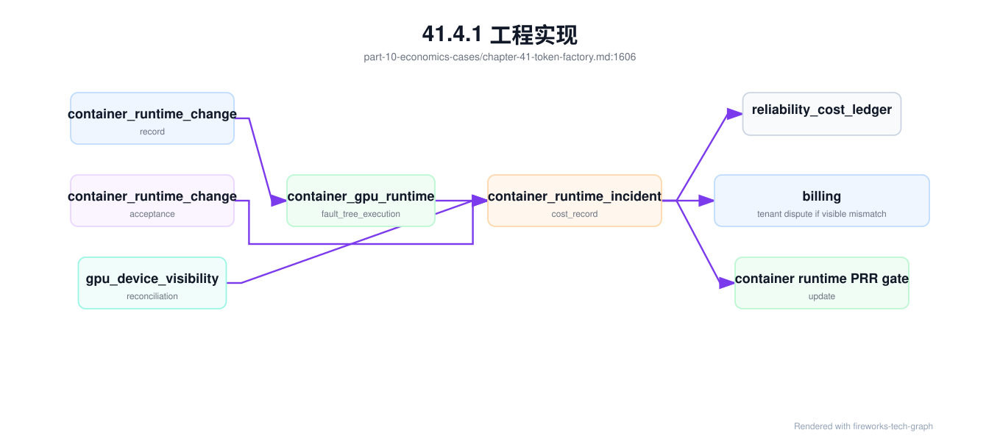
这份记录能把“底层小升级”翻译成 Token Factory 语言。一次 CDI spec 生成错误如果只影响 canary 节点，成本可能只是复测和回滚；如果它发生在生产推理池高峰前，成本就包括未启动副本、TTFT 违约、fallback、客户 credit 和支持工单；如果可见性错配让 Pod 看到了未分配 GPU，成本还包括隔离风险和账单争议。成本分层后，平台才能决定下一次 runtime 变更是否需要更长 canary、更严格 PRR，或把 Operator 升级与 driver/Toolkit release train 合并管理。
质量成本需要单独的 quality_cost_ledger。低质量 token 不一定失败，也不一定触发 5xx，但会造成用户追问、重新生成、人工接管、退款、客户支持、投诉、流失、额外评测和修复成本。若这些成本被平均摊进正常请求，平台会误以为某个低成本模型毛利更高，实际却把成本转嫁给运营和客户成功团队。质量成本账本让“便宜但没用的 token”从报表里显形。
quality_cost_ledger:
window: 2026-06-19T00:00Z/2026-06-20T00:00Z
scope:
tenant: enterprise-a
application: support-chat
model_version: af-chat-large-202606
task_slice: rag_citation
serving_quality_contract: sqc-af-chat-20260619-r3
evidence:
quality_evidence_bundle: qeb-20260620-support-001
rag_agent_evidence_bundle: raeb-20260620-001
quality_gate_execution: qge-af-chat-20260620-001
eval_slice_contract: esc-support-202606
golden_set_governance_record: gsg-support-202606
eval_contamination_invalidation_record: none_or_linked
judge_drift_calibration_record: jdcr-support-20260620-001
quality_feedback_intake_pipeline: qfip-support-202606
online_experiment_guardrail: oeg-support-20260620
human_feedback_evidence: sampled
routing_quality_decision_records: sampled
serving_rollback_records: [srr-20260620-001]
serving_rollback_drills: [srd-af-chat-20260620]
rag_quality_regression_records: [rqr-20260619-0007]
agent_budget_ledgers: sampled
agent_tool_execution_records: sampled
production:
billable_tokens: measured
low_quality_tokens: estimated_from_feedback_and_eval
repeated_prompt_tokens: measured
regeneration_tokens: measured
selected_context_tokens: measured_if_rag
failed_agent_run_tokens: measured_if_agent
quality_losses:
human_handoff_cost: calculated
refund_or_credit: calculated_if_applicable
support_ticket_cost: calculated
churn_risk_cost: estimated_policy
rework_cost: calculated
experiment_harm_cost: calculated_from_guardrail_breach
failed_tool_execution_cost: calculated_if_agent
security_containment_cost: calculated_if_tool_incident
prevention_cost:
evaluation_run_cost: measured
eval_slice_contract_maintenance_cost: allocated
golden_set_governance_cost: allocated
eval_contamination_scan_cost: allocated
judge_drift_calibration_cost: allocated
feedback_intake_triage_cost: measured
human_labeling_cost: measured
human_feedback_review_cost: measured
red_team_cost: measured
regression_suite_cost: measured
rollback_drill_cost: measured
derived:
quality_adjusted_cost_per_token: calculated
cost_per_successful_answer: calculated
cost_per_successful_task_by_slice: calculated
rollback_drill_prevention_value: estimated_from_loss_avoided
value_token_ratio: calculated
质量调整后的成本可以这样理解：
quality_adjusted_cost_per_token =
(base_request_cost
+ quality_losses
+ allocated_prevention_cost)
/ successful_user_visible_tokens
cost_per_successful_answer =
(all_request_cost_for_task_slice
+ human_handoff_cost
+ regeneration_cost
+ refund_or_credit)
/ successful_tasks
这个口径会改变模型路由和定价。一个小模型的 base cost/token 低，但如果导致更多追问和人工接管，cost_per_successful_answer 可能高于大模型；一个强模型输出更长，base cost/token 高，但如果提高一次解决率，质量调整后的单位成功成本可能更低。Token Factory 的目标不是最低 token 成本，而是在质量和 SLO 约束下的最低成功任务成本。
质量成本账本还应能反向更新路由和发布策略。若 routing_quality_decision_record 显示某个 task slice 被频繁路由到便宜模型，但 quality_cost_ledger 显示人工接管和投诉成本上升，Gateway scorecard 应降低该模型在该切片的权重；若 serving_rollback_record 显示一次质量回滚避免了持续低质量损失，预留 canary 容量和回滚演练就有经济依据；若某次 quality_gate_execution 的 prevention cost 很高但几乎没有线上质量损失，团队可以评审门禁是否过度。质量经济模型的作用不是惩罚模型团队，而是让质量投入、路由策略和商业结果在同一张表里对齐。
评测和治理成本也要分清“浪费”和“保险”。eval_slice_contract 维护、golden set 访问审计、human feedback review、线上实验 guardrail 和 rollback drill 都会消耗预算，但它们保护的是高价值任务的毛利下限。一次 guardrail 自动冻结可能减少当日 token 收入，却避免更多退款、人工接管和客户流失；一次 rollback drill 看起来没有产出 token，却能把事故恢复时间从不可控变成可估计。经济上应比较 prevention cost 与 loss avoided，而不是把所有治理成本都当作 overhead。
评测证据失效也要进入质量经济模型。eval_contamination_invalidation_record 会带来重标、替换样本、重跑 gate 和延迟发布成本；judge_drift_calibration_record 会消耗人工 anchor、历史输出回放和阈值重标定成本；quality_feedback_intake_pipeline 会消耗 triage 和隐私处理成本。但这些成本保护的是错误放量的下行风险。若污染的 golden set 放行了低质量模型，后续人工接管、退款和客户流失通常更贵；若 judge 变松导致严重样本漏判，质量事故会从评测平台转移到用户现场。
quality_evidence_validity_cost:
window: 2026-06-20
scope:
application: support-chat
task_slices: [rag_citation, tool_call_json]
prevention_cost:
contamination_scan: calculated
golden_set_replacement: calculated_if_needed
judge_drift_calibration: calculated
gate_rerun_gpu_and_labeling: calculated
feedback_intake_triage_and_redaction: calculated
avoided_loss_model:
blocked_invalid_gate_release: true_or_false
estimated_low_quality_token_loss_avoided: calculated_if_blocked
estimated_handoff_or_refund_loss_avoided: calculated_if_blocked
ledger_updates:
quality_cost_ledger: append
commercial_pnl_ledger: append_if_customer_or_product_margin_impacted
production_readiness_review: update_if_gate_invalidated
这个成本对象能帮助团队解释为什么维护评测集和校准 judge 不是研究洁癖。它们是质量保险机制的一部分。成熟的 AI Factory 应把质量证据有效性成本和事故损失放在同一张账本里：如果 gate 失效率高，说明评测治理需要投资；如果治理成本高但很少拦截风险，说明门禁可能过重。经济模型应该帮助找到合适强度，而不是简单削减质量治理。
质量事故本身还应生成 quality_incident_cost_record。quality_cost_ledger 适合做窗口级汇总，quality_evidence_validity_cost 适合记录证据治理成本；事故成本记录则解释一次具体质量退化或证据失效造成了什么损失、哪些动作是止血、哪些成本是预防、哪些损失本可以通过门禁避免。它把第 39 章的 quality_fault_tree_execution 和第 44 章的 PRR 行动项连接到经济账本。
quality_incident_cost_record:
record_id: qicr-20260620-001
incident_id: inc-20260620-quality-001
linked_evidence:
quality_fault_tree_execution: qfte-20260620-001
quality_evidence_bundle: qeb-20260620-support-001
quality_evidence_validity: qev-support-20260620-001
quality_evidence_invalidation_event: qeie-20260620-001_if_any
quality_gate_freshness_contract: qgfc-support-20260620
serving_release_evidence_bundle: sreb-af-chat-large-20260620-001
affected_scope:
tenants: [enterprise-a]
task_slices: [rag_citation, tool_call_json]
release_window: measured
affected_requests: measured_or_sampled
low_quality_tokens: estimated
direct_losses:
human_handoff_cost: calculated
regeneration_and_retry_token_cost: calculated
customer_credit_or_refund: calculated_if_applicable
support_ticket_cost: calculated
churn_or_contract_risk: estimated_policy
experiment_harm_cost: calculated_if_guardrail_breached
response_and_prevention_cost:
gate_rerun_cost: calculated_if_evidence_invalidated
judge_recalibration_cost: calculated_if_judge_drift
dataset_relabel_or_replacement_cost: calculated_if_contamination
rollback_or_route_freeze_cost: calculated
evidence_bundle_collection_cost: measured
avoided_loss:
prevented_ramp_to_high_value_tenants: true_or_false
estimated_loss_avoided_by_freeze: estimated_policy
estimated_loss_avoided_by_rollback_drill: estimated_policy
ledger_updates:
quality_cost_ledger: append
commercial_pnl_ledger: append_if_customer_visible
production_readiness_review: update_if_preventable
这个对象能避免两种常见经济误判。第一种是把质量事故成本只算成“退款和支持”，忽略反复追问、重新生成、人工接管、低质量实验伤害和客户续约风险；第二种是把证据失效后的 gate rerun、judge calibration、样本重标和实验冻结都算作浪费。若这些动作阻止了高价值租户继续放量，它们应被记为 prevention cost，并与 avoided loss 对比。质量治理的目标不是便宜，而是让高价值 token 可承诺。
quality_prevention_value_record:
window: 2026-06-20T00:00Z/2026-06-21T00:00Z
scope:
application: support-chat
task_slice: rag_citation
prevention_actions:
online_experiment_guardrail_freeze:
guardrail: oeg-support-20260620
experiment_harm_cost_observed: calculated
projected_loss_without_freeze: estimated_policy
serving_rollback_drill:
drill: srd-af-chat-20260620
rollback_time_confidence: improved
projected_incident_loss_reduction: estimated_policy
golden_set_governance:
governance_record: gsg-support-202606
avoided_invalid_release_decision: estimated_policy
derived:
prevention_cost: calculated
loss_avoided: estimated_policy
prevention_roi: calculated_or_review
这个记录不能被误用成精确财务承诺，因为许多损失只能估算；它的价值是让工程治理进入同一套商业语言。没有这张账，团队只会看到评测、人工、演练和 guardrail 的成本，看不到它们避免了多少低质量 token、错误路由、账单争议和客户支持成本。Token Factory 的经济性不是把每个流程压到最低，而是把每个 token 生产成“有用、可计量、可承诺”的输出。
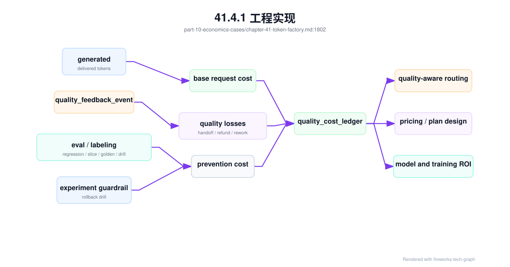
多模态 workload 不能只用 text token 计费和算成本。一次扫描 PDF 问答可能消耗文件上传、病毒扫描、页渲染、OCR、layout、视觉 embedding、LLM 推理、引用回放、派生产物存储和人工复核；一次视频理解可能消耗转码、抽帧、视觉 encoder、ASR、时间轴索引和长上下文总结。若账本只记录 input/output token，平台会把大量 CPU/GPU/存储成本隐藏在“免费预处理”里，定价、限流和毛利都会失真。
multimodal_metering_event:
event_id: mmme-20260620-001
request_id: req-claims-20260620-001
tenant: enterprise-a
application: claims-document-review
linked_objects:
multimodal_workload_profile: mwp-claims-document-review-202606
media_artifact_manifest: mam-claims-doc-20260620-001
media_processing_pipeline_record: mppr-claims-20260620-001
multimodal_serving_contract: mmsc-claims-doc-20260620-r2
units:
text:
input_tokens: measured
output_tokens: measured
ocr_tokens: measured
media:
pages_rendered: measured
image_tiles_encoded: measured
audio_seconds_processed: measured_if_audio
video_frames_sampled: measured_if_video
layout_blocks_extracted: measured
compute:
preprocessing_cpu_seconds: measured
preprocessing_gpu_seconds: measured_if_used
model_gpu_seconds: measured
storage:
original_bytes: measured
derived_bytes: measured
artifact_storage_gb_days: accrued
billing_state:
billable: true_or_hold
hold_reason: quality_or_privacy_or_metering_dispute
customer_visible_units: product_policy_defined
这个事件把计量拆成内部成本单位和客户可见单位。客户产品页可以只展示“文档页数 + 输出 token”或“视频分钟数 + 输出 token”，但内部账本必须保留 OCR token、image tile、GPU seconds、派生产物存储和人工复核等细项。否则平台无法判断某个模型贵，还是 OCR 管线贵；无法判断同样 100 页 PDF 中，扫描件、电子 PDF 和带表格合同的成本差异；也无法在客户质疑账单时回放每一步。
multimodal_cost_ledger:
window: 2026-06-20T00:00Z/2026-06-21T00:00Z
scope:
tenant: enterprise-a
application: claims-document-review
task_slice: scanned_pdf_claim_review
evidence:
multimodal_metering_events: sampled
media_artifact_manifests: sampled
media_processing_pipeline_records: sampled
multimodal_quality_gate_execution: mm-qge-claims-20260620
multimodal_evidence_bundle: mmeb-claims-20260620-001
cost_components:
upload_and_scan_cost: calculated
page_render_cost: calculated
ocr_or_asr_cost: calculated
layout_or_frame_extraction_cost: calculated
embedding_or_encoder_cost: calculated
llm_inference_cost: calculated
artifact_storage_and_retention_cost: calculated
failed_or_retried_stage_cost: calculated
human_review_cost: calculated_if_applicable
deletion_or_export_audit_cost: calculated_if_triggered
revenue_or_value:
customer_billable_units: product_policy_defined
value_metric: reviewed_claim_with_cited_evidence
revenue_per_reviewed_claim: calculated_or_internal_value
derived:
cost_per_media_page: calculated_if_document
cost_per_audio_minute: calculated_if_audio
cost_per_video_minute: calculated_if_video
cost_per_successful_review: calculated
quality_adjusted_margin: calculated
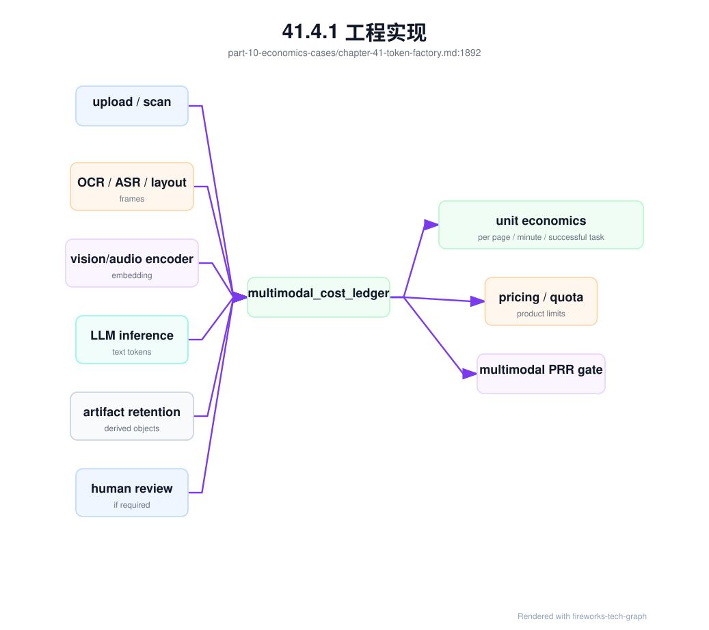
这个账本会改变产品和平台取舍。若 OCR 失败重试成本高，应优先优化文件准入和 OCR pipeline，而不是换更大模型；若派生产物存储成本持续上升，应调整 retention、压缩和删除策略；若人工复核成本占比高，应优化质量 gate 或把高风险任务产品化为人工增强服务；若某类视频任务毛利长期为负，产品应调整价格、帧采样策略或限制输入规格。多模态经济性不是文本 token 经济性的简单扩展，它需要媒体单位和成功任务单位并存。
41.4.2 常见故障¶
第一类故障是只看 QPS，不看 token。QPS 上升可能是短请求增长，也可能是 Agent 内部调用放大；QPS 稳定也可能掩盖 input token 和 output token 激增。解决方向是把容量、账单和告警都改成请求数与 token 数并行观察，并按请求形态拆分。
第二类故障是只统计 GPU 成本。GPU 是最大成本项之一，但不是全部。电力、制冷、机房、网络、存储、平台研发、运维、失败重试、冗余和采购机会成本都会进入真实 cost/token。忽略这些成本，会让低价策略看起来可行，直到规模扩大后暴露亏损。
第三类故障是收入口径和成本口径不一致。销售按套餐收费，平台按 token 计量，成本按 GPU 小时分摊，三者没有统一映射，结果无法判断某个客户、模型或场景是否盈利。解决方向是建立从产品计划到资源消耗的映射表，并定期对账。
第四类故障是追求 tokens/s 牺牲体验。更大的 batch、更高混部和更少冗余可以提高短期产出，却可能让 TTFT、TPOT 和错误率恶化。若报表只奖励产量，不约束质量和 SLO，平台会优化错误目标。Token Factory 必须把 error budget 和质量门禁放进经济模型。
第五类故障是把 Token Factory 当成 AI Factory 全部。经济指标能指导运营，但不能替代模型安全、数据治理、平台可靠性和用户价值判断。只追逐低成本 token，会导致质量下降和产品信任受损。正确做法是把 Token Factory 放在 AI Factory 系统工程之内。
第六类故障是报表粒度过粗。全平台平均 cost/token 看起来健康，但某些模型、租户或长上下文场景可能持续亏损。平均值适合看趋势，不能替代分组归因。运营动作必须落到可负责的对象上。
第七类故障是把训练成本和推理收入割裂。模型训练投入如果不进入长期 ROI 分析，团队会低估模型迭代成本；推理收益如果不反馈训练队列，GPU 投资也无法优化。
第八类故障是只统计 allocated GPU hours，不统计 effective training GPU hours。作业卡在排队后启动、NCCL 初始化、checkpoint 恢复或数据预检阶段，都会消耗时间和有时消耗 GPU，但不产生有效训练 token。若这些浪费被摊进正常训练成本，团队会误判模型训练本身昂贵，而忽略调度、镜像、网络或存储问题。
第九类故障是把存储成本平均摊薄。数据集反复读取、checkpoint 保留过多、模型权重冷启动、cache miss、对象存储请求限流和孤儿 artifact，都会消耗成本并影响 token 产出。若这些成本只按全平台平均分摊，团队无法看到某个模型、租户或训练任务的真实成本。Token Factory 应把 storage_cost/token 和 storage_waste_gpu_hours 纳入账本。
第十类故障是把可靠性当作纯成本中心。冗余、准入、灰度、回滚演练、健康隔离和 SRE 值班都会增加显性成本，但它们减少失败 token、赔付、重跑、客户流失和事故响应成本。若经济模型只看稳定态 GPU 利用率，就会倾向于削掉这些保护机制。正确做法是同时展示 reliability_cost/token、incident_waste_gpu_hours 和 error_budget_burn 对毛利的影响。
第十一类故障是忽略低质量 token。某个模型 cost/token 更低，线上回答也很少报错，但用户反复追问、客服人工接管和退款增加。若报表只看 billable token 和 GPU 成本，会错误地扩大这个模型流量。解决方向是把 quality_feedback_event、人工接管、重新生成、投诉和退款汇总到 quality_cost_ledger，用 cost per successful task 而不是只用 cost/token 做决策。
第十二类故障是把评测和人工标注视为纯研发成本。评测、红队、人工标注和回归维护确实消耗成本，但它们减少线上低质量损失和事故复发。若没有 prevention cost 与 quality loss 的对比，组织可能削减评测预算，短期毛利变好，长期质量损失上升。质量成本账本能解释哪些质量投入是经济上合理的。
41.4.3 性能指标¶
Token Factory 的产能指标包括 total tokens/s、input tokens/s、output tokens/s、per-model tokens/s、per-tenant tokens/s、replica throughput 和峰谷负载。它们回答系统能生产多少 token、瓶颈在哪个模型或租户、是否需要扩容或限流。产能指标要与上下文长度和输出长度分布一起看。
能效指标包括 tokens/W、tokens/kWh、GPU power、node power、PUE 相关分摊和单位 token 电力成本。它们回答同样电力下能生产多少有效 token，以及不同硬件、引擎、精度和机房策略是否更高效。能效指标必须保持 workload 口径一致。
成本与收入指标包括 cost/token、revenue/token、gross margin、failure waste cost、free quota cost、reserved capacity cost 和 customer/model margin。它们回答哪些业务创造价值，哪些业务消耗资源但毛利不足。成本指标必须能按模型、租户、资源池和产品计划拆分。
体验和质量指标包括 TTFT、TPOT、TPOP、E2E latency、错误率、限流率、streaming 中断、fallback、人工接管、质量评测和安全拦截。它们防止经济优化牺牲用户体验和模型可信度。没有体验指标约束的 cost/token，可能会把平台带向错误方向。
质量经济指标包括 low quality token rate、regeneration token ratio、human handoff cost、refund per task、complaint cost、quality adjusted cost/token、cost per successful answer、quality prevention cost、regression prevented loss 和 value/token。它们把模型质量从主观体验转成经济事实。对于企业客户，cost per successful answer 往往比 cost per output token 更能说明产品价值。
训练相关指标包括训练 GPU 小时、有效 step、失败重跑成本、checkpoint 成本、评测通过率、上线收益、推理成本改善和训练 ROI。它们把离线训练投资与在线 token 经济性连接起来。最终目标是让训练投入能解释为质量提升、收入提升、成本下降或长期能力沉淀。
存储相关经济指标包括 dataset read cost、checkpoint write/restore cost、model artifact distribution cost、cache hit savings、orphan artifact cost、metadata hotspot cost 和 storage-induced GPU idle hours。它们把网络存储层的设计选择连接到 token 成本。比如提高权重 cache 命中可以降低 TTFT 和冷启动浪费，优化 checkpoint manifest 和写入模式可以减少 wasted GPU hours，清理过期 checkpoint 可以降低长期存储成本。
可靠性相关经济指标包括 error budget burn、incident count、incident_cost、failed token cost、retry token cost、SLO credit、wasted GPU hours due to incident、change rollback cost、degraded capacity cost 和 maintenance opportunity cost。它们回答可靠性问题对 token 经济性造成了多少真实损失。一个高利用率资源池如果经常触发 incident，未必比低一点利用率但稳定的资源池更经济。
训练 ROI 指标应至少拆成四层：资源消耗、有效进展、质量产出和商业反馈。资源消耗回答花了多少，追回浪费；有效进展回答是否产生训练 token 和 checkpoint；质量产出回答模型是否更好；商业反馈回答上线后是否改变 revenue/token、cost/token 或用户价值。四层缺一，ROI 都会被误读。
数据质量指标同样重要。计量缺失率、账单对账差异、成本分摊覆盖率、异常 token 占比和报表延迟，决定这些经济指标是否可信。Token Factory 首先是事实系统，其次才是优化系统。
所有指标都应有 owner 和解释文档。没有 owner 的指标没人修，没人解释的指标容易被误用。经济指标一旦进入预算和绩效，口径治理就成为基础设施的一部分。
Token Factory 指标还需要防止 Goodhart 定律。若只考核 cost/token，团队可能牺牲质量和可靠性；若只考核 tokens/s，团队可能放大低价值 token；若只考核 revenue/token，团队可能忽略失败赔付和长期留存。因此关键经济指标必须配套约束指标。
| 目标指标 | 必须同时约束 | 否则可能出现的问题 |
|---|---|---|
| 降低 cost/token | TTFT、TPOT、质量、安全、错误率 | 低成本但用户不可用 |
| 提高 tokens/s | P99 延迟、KV pressure、失败率 | 高吞吐但长尾恶化 |
| 提高 revenue/token | 续约、退款、人工接管、支持成本 | 短期高价但长期流失 |
| 提高 GPU 利用率 | error budget、drain 能力、故障恢复 | 利用率高但无冗余 |
| 提高 tokens/W | workload 口径、SLO、模型质量 | 只优化容易负载 |
经济 dashboard 应把目标指标和约束指标放在同一页。例如展示某模型 cost/token 下降时，同时展示该模型 TTFT、TPOT、质量评测、fallback 和错误率。没有约束指标的经济优化，很容易把局部成本转嫁给用户体验或 SRE。
41.4.4 设计取舍¶
第一个取舍是产量与延迟。更大 batch、更多请求合并和更高资源共享通常能降低 cost/token，但会增加排队和 TTFT 风险。在线 Chat、代码助手和实时 Agent 对首 token 敏感，不能只按吞吐优化；批量推理和离线生成更适合追求高吞吐和低成本。
第二个取舍是模型能力与单位成本。更强模型可能带来更高 revenue/token 和更好用户留存，但也会带来更高 GPU 成本、显存占用和延迟。更小模型成本低，却可能需要更多重试或人工接管。模型路由、级联、蒸馏和缓存，都是在能力与成本之间寻找可控平衡。
第三个取舍是统一定价与精细计费。统一价格易理解、易销售，但会隐藏长上下文、reasoning、多模态和 Agent 的成本差异；精细计费更公平，却增加产品复杂度和客户理解成本。平台应从简单价格开始，但必须在内部保留精细成本模型，避免定价长期偏离成本。
第四个取舍是短期毛利与长期能力。减少冗余、压缩运维和削减评测可以提高短期毛利，但可能降低可靠性和模型质量；投入训练、平台自动化和能效优化会增加短期成本，却可能降低长期 cost/token 或提升 revenue/token。Token Factory 应帮助团队看到时间维度。
最终，Token Factory 的设计目标不是让所有数字都变小或变大，而是让产能、能效、成本、收入、质量和可靠性之间的关系可见。可见之后，组织才能有纪律地决定何时扩容、何时调价、何时优化模型、何时拒绝低价值流量。
还要接受模型不完美。早期用粗粒度分摊启动，逐步提高精度，通常比等待完美成本系统更现实。但每一次估算都应标明假设和误差范围，避免把估算包装成精确事实。
41.5 小结与延伸阅读¶
41.5.1 小结¶
- Token Factory 是 AI Factory 的经济性视角，不是 AI Factory 的全部。
- tokens/s 描述产能，tokens/W 描述能效，cost/token 描述单位成本，revenue/token 描述收入能力。
- GPU 利用率必须和 HBM、KV Cache、功耗、SLO 和质量指标一起看。
- 推理毛利来自收入、成本、利用率、质量和体验的共同作用。
- 训练 ROI 需要把训练成本、模型质量、上线收益和平台沉淀放在同一闭环中评估。
quality_cost_ledger让低质量 token、人工接管、退款、重复追问、评测和回归成本进入毛利模型，避免只追求便宜 token。